第 1 集 · 无声动态分镜
35 张关键帧按分镜切点组成，104.5 秒
素材文件没有删除；这里重新汇总已经完成的关键帧、静态预演和真实 H3 样本。
35 张关键帧按分镜切点组成，104.5 秒
E01-01-v01.mp4；奔向门准备开门，无法连接下一段回长椅开箱。保留作失败证据，重做使用 v02。
E01-02-v01.mp4；已归档，仍须与上一段和下一段连播 QC 后才能正式采用。
13.67 秒、含声音，真实模型验证样本
用于对比真实 H3 成片与原始关键帧节奏
3 张图，9.5 秒
4 张图，13 秒
定时、画幅和关键镜头检查图

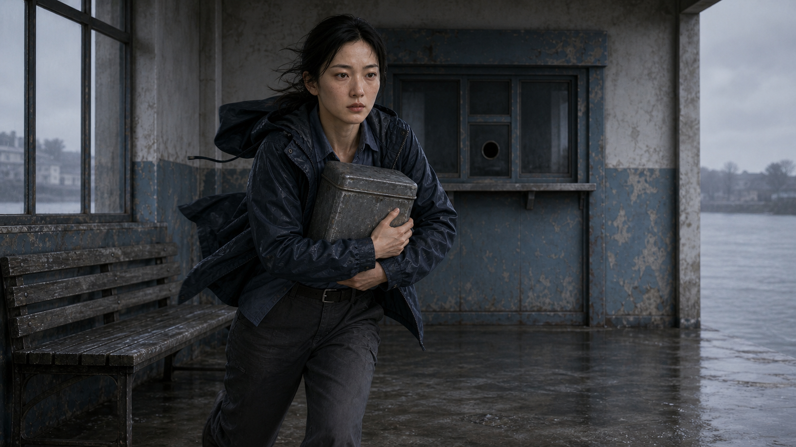
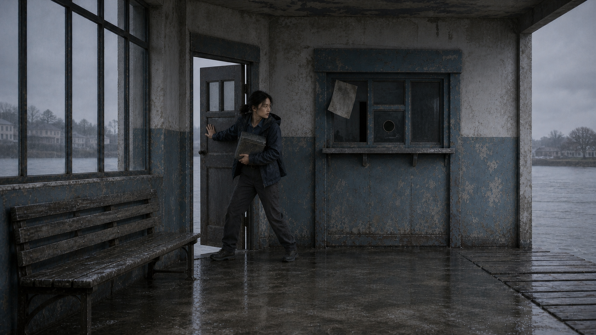
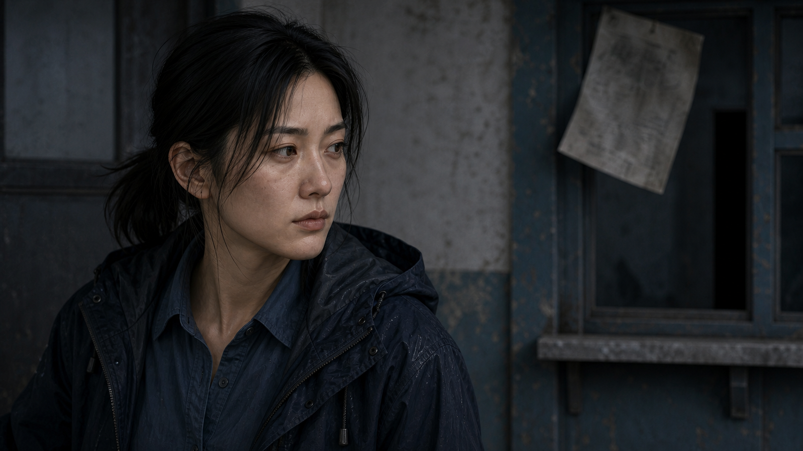
许知遥刚从拆迁清点处领回父亲封存多年的旧物箱，抱着铁皮箱快步冲进候船厅，箱里反复漏出少年喘息。
她回身推紧候船厅的旧门。
拆迁通知在售票窗上被风吹起。
许知遥连他的东西也等不到明天。
How the reference pictures align with the target video — Picture 1 (from Shot 1) aligns with the 0.00-second mark of the target video; Picture 2 (from Shot 2) aligns with the 3.50-second mark of the target video; Picture 3 (from Shot 3) aligns with the 7.00-second mark of the target video. integrated_multimodal_description: [Shot 1] Cinematic, live-action, cold blue-gray palette. Following <Picture 1>, a slim young audio archivist rushes through the abandoned ferry waiting hall while hugging a tin box freshly retrieved from the demolition inventory of her late father's sealed belongings; a tracking shot moves with her as a faint adolescent breath leaks repeatedly from inside the box. She is already crossing into the hall, not running toward a closed door. [Shot 2] At 00:03.500, the camera cuts to <Picture 2>. The old door is visibly open about forty degrees with exterior daylight in the gap. Holding the tin box under her left arm, she presses the inside face of the door with her right palm and pushes it toward the jamb until it closes. Her body then turns away from the door toward the bench. This motion is only OPEN DOOR TO CLOSED DOOR; never reach for a knob, never pull the door open, never run toward a closed door. The demolition notice flutters against the ticket window. The camera uses a static shot. [Shot 3] At 00:07.000, the camera cuts to <Picture 3>: she has completed closing the door and is no longer reaching toward it. A slow push in approaches her controlled face as the young woman with a clear, cool, restrained voice (S1) says: <d>[Chinese] 连他的东西也等不到明天。</d> End with her attention and body direction oriented away from the door and toward the bench/work area, ready for the next segment. overall_soundscape: Hurried footsteps cross damp concrete, the already-open old door scrapes shut once, paper flaps against metal, and a faint recorded breath leaks from the box. non_diegetic_music: A low sustained cello tone with sparse muted piano notes.
段内语义已审核；2026-08-24 根据首个 H3 失败样本修复门的开合初态、推门方向和离门终态，E01-01 v01 保留为失败证据，后续使用 v02。
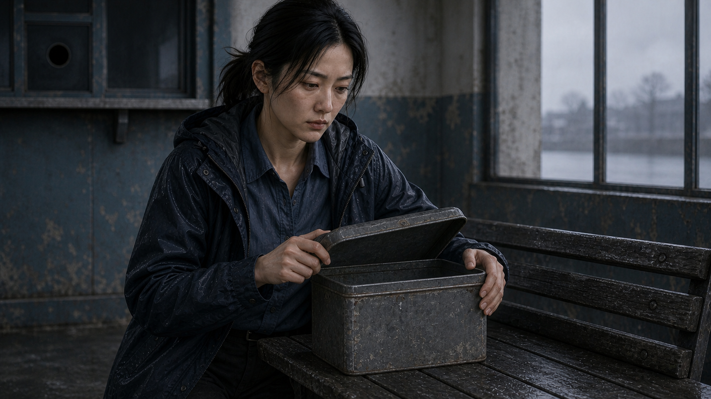
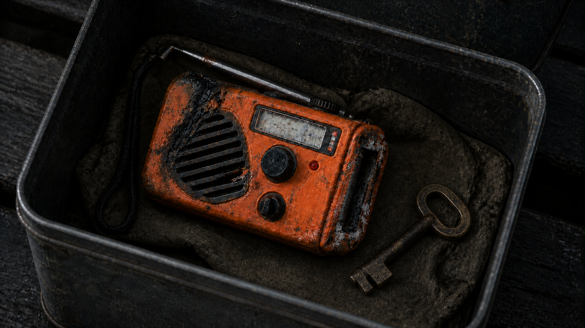
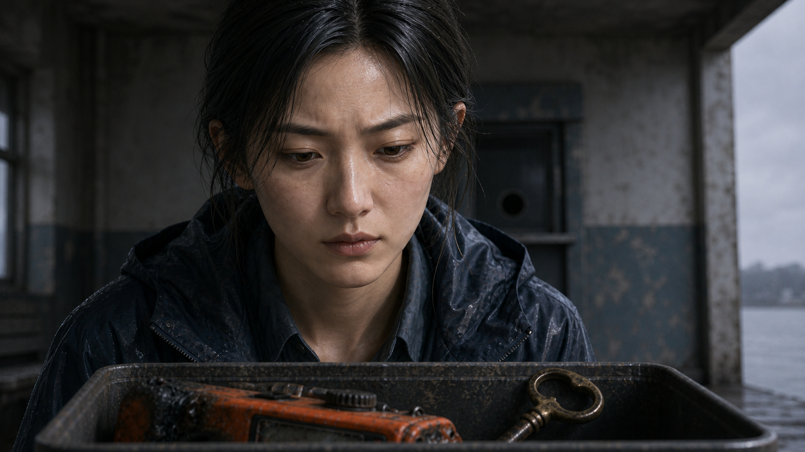
许知遥把铁皮箱放到长椅上。
她掀开箱盖。
烧损的橙色电台躺在黄铜船钥匙旁。
许知遥爸，你就留下这些？
How the reference pictures align with the target video — Picture 1 (from Shot 1) aligns with the 0.00-second mark of the target video; Picture 2 (from Shot 2) aligns with the 3.50-second mark of the target video; Picture 3 (from Shot 3) aligns with the 7.00-second mark of the target video. integrated_multimodal_description: [Shot 1] Cinematic, live-action, cold blue-gray palette. Matching <Picture 1>, the young archivist sets the tin box on the bench and opens it in a static shot. [Shot 2] At 00:03.500, the camera cuts to the object layout in <Picture 2>; a slow push in reveals the fire-scarred orange radio beside the blackened brass key. [Shot 3] At 00:07.000, the camera cuts to <Picture 3> and holds a static shot on her face and the open box as the restrained young woman (S1) asks softly: <d>[Chinese] 爸，你就留下这些？</d> overall_soundscape: The tin box lands on old wood, its hinges creak, cloth shifts, and distant river wind moves through the hall. non_diegetic_music: Muted piano notes over a restrained low string drone.
人工语义审核完成：逐镜动作、出镜人物、画外录音、口型关系、道具连续性和声纹标签已与中文节拍核对。
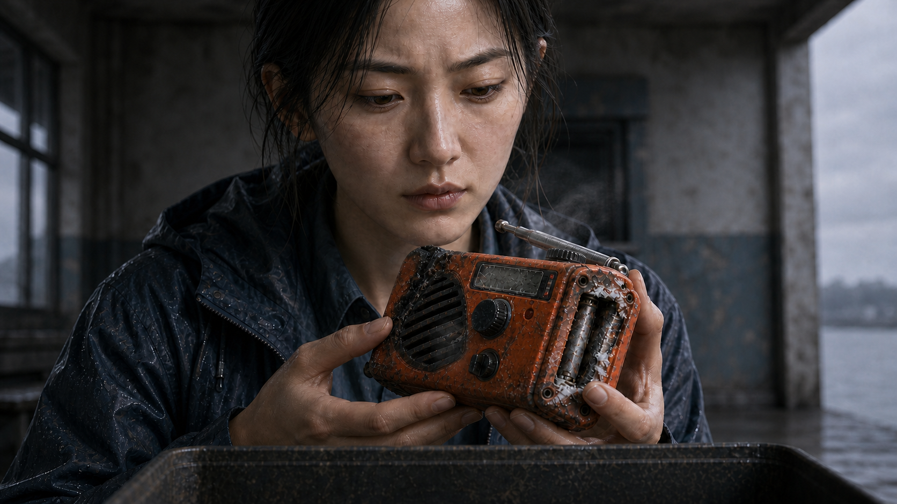
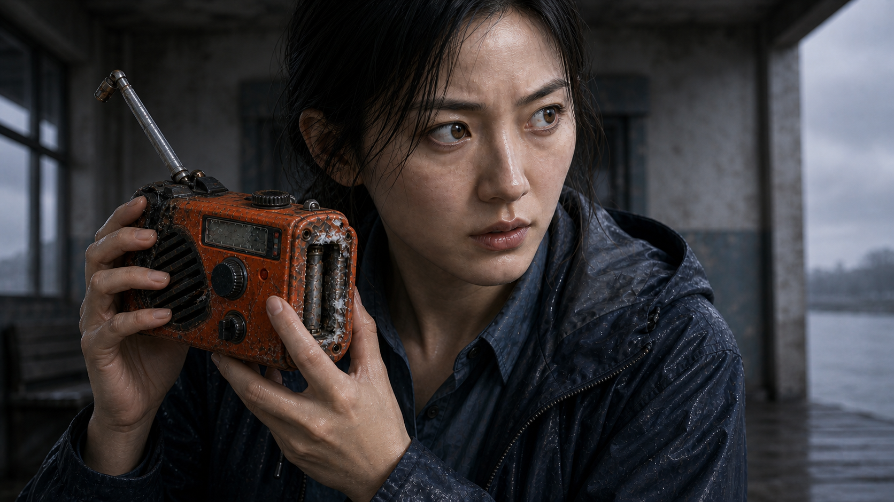
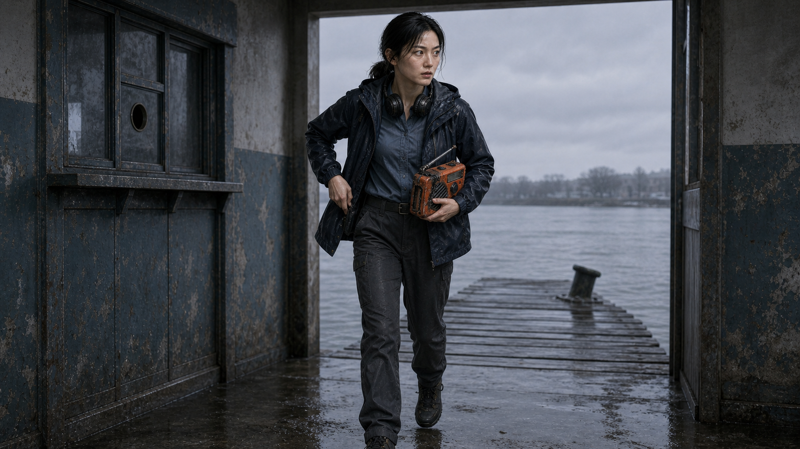
她拿起电台检查烧融的外壳。
电台扬声器又挤出一声短促喘息。
许知遥这不是电流声。
许知遥把黄铜钥匙装进口袋。
她抱起电台走出候船厅。
How the reference pictures align with the target video — Picture 1 (from Shot 1) aligns with the 0.00-second mark of the target video; Picture 2 (from Shot 2) aligns with the 3.50-second mark of the target video; Picture 3 (from Shot 3) aligns with the 6.50-second mark of the target video. integrated_multimodal_description: [Shot 1] Cinematic, live-action, cold blue-gray palette. A slow push in follows <Picture 1> as the young archivist lifts the scarred orange radio and examines its melted shell; a short human breath breaks through the speaker. [Shot 2] At 00:03.500, the camera cuts to <Picture 2> and holds a static shot on her alert reaction as the young woman (S1) says: <d>[Chinese] 这不是电流声。</d> [Shot 3] At 00:06.500, the camera cuts to <Picture 3>: a tracking shot follows her pocketing the brass key, gathering the radio, and walking quickly toward the open door. overall_soundscape: The radio grille crackles, one breath cuts through static, fabric rustles as the key enters a pocket, and footsteps accelerate toward the doorway. non_diegetic_music: The low string drone tightens with one restrained pulse.
人工语义审核完成：逐镜动作、出镜人物、画外录音、口型关系、道具连续性和声纹标签已与中文节拍核对。
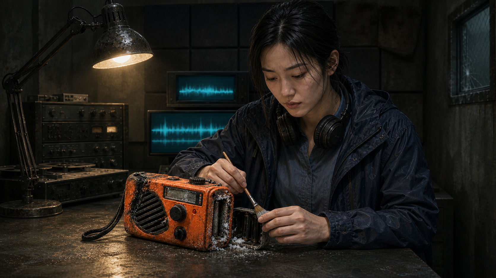
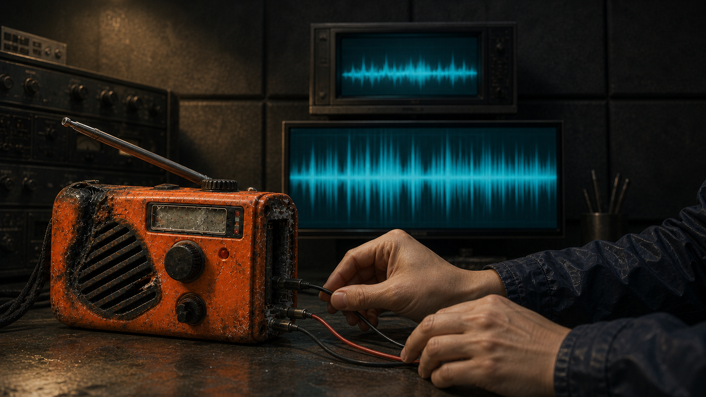
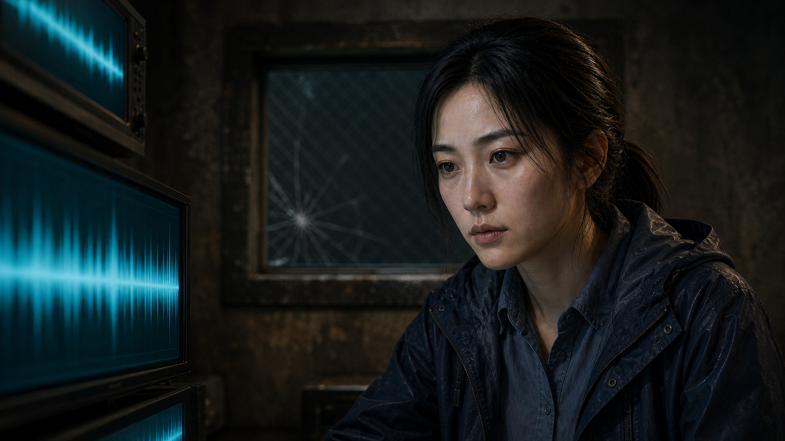
当晚直到次日凌晨，许知遥回到临时修复室，把电台放在灰绿修复台中央。
她用软刷清掉电池仓里的盐霜。
她接上实验电源。
两层屏幕同时跳出密集波形。
许知遥先保原始轨，再做副本。
How the reference pictures align with the target video — Picture 1 (from Shot 1) aligns with the 0.00-second mark of the target video; Picture 2 (from Shot 2) aligns with the 3.50-second mark of the target video; Picture 3 (from Shot 3) aligns with the 7.00-second mark of the target video. integrated_multimodal_description: Time transition: the story advances from the previous overcast morning through that night into the following predawn hours; it never moves backward in time. [Shot 1] Cinematic, live-action, mixed amber and cyan midnight light. The static shot follows <Picture 1> as the young technician places the orange radio on the steel bench and gently brushes salt from the open battery compartment. [Shot 2] At 00:03.500, the camera cuts to <Picture 2>; a pan right travels from the connected power leads to two monitors as dense waveforms jump alive. [Shot 3] At 00:07.000, the camera cuts to <Picture 3> and holds a static shot as the clear-voiced technician (S1) says with measured precision: <d>[Chinese] 先保原始轨，再做副本。</d> overall_soundscape: Soft brush strokes scrape salt crystals, power relays click, cooling fans start, and a low electrical hum fills the cramped room. non_diegetic_music: Sparse glassy tones over a quiet bass pulse.
人工语义审核完成：逐镜动作、出镜人物、画外录音、口型关系、道具连续性和声纹标签已与中文节拍核对。
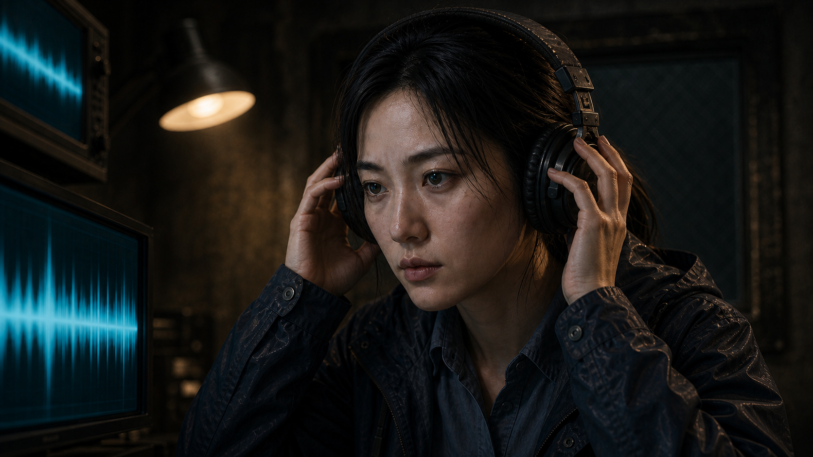
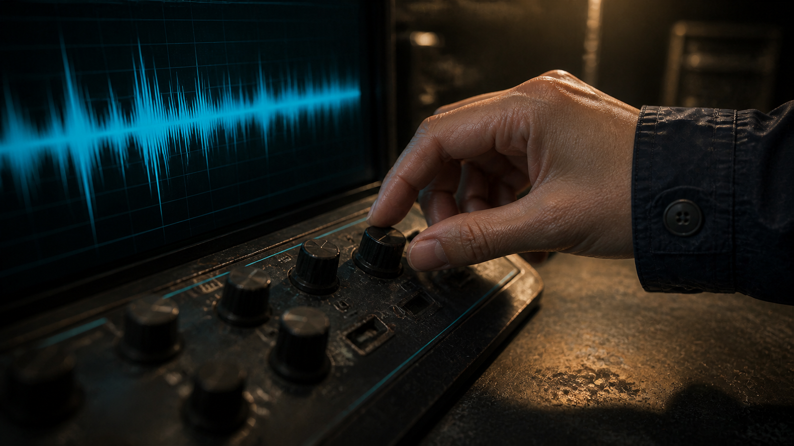
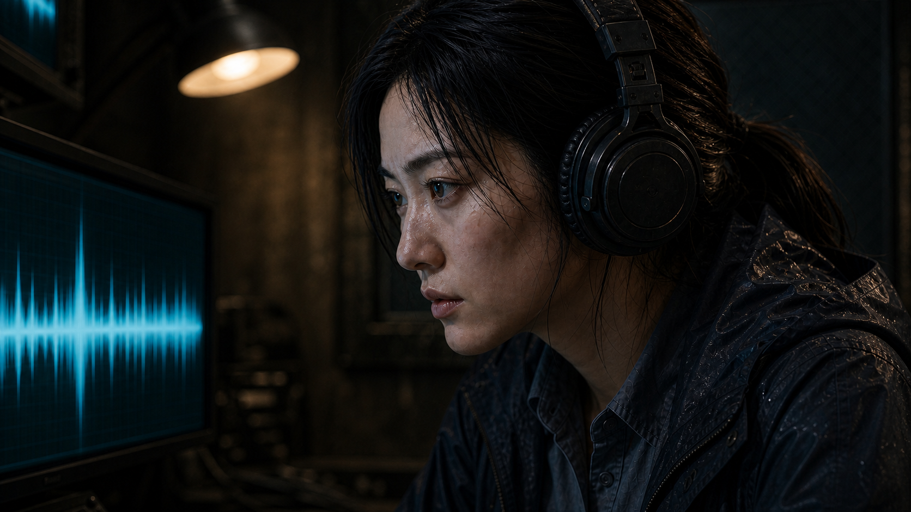
她戴上耳机。
连续爆音盖住整条音轨。
许知遥拖动第一段降噪参数。
许知遥潮声太满，人声在下面。
How the reference pictures align with the target video — Picture 1 (from Shot 1) aligns with the 0.00-second mark of the target video; Picture 2 (from Shot 2) aligns with the 3.50-second mark of the target video; Picture 3 (from Shot 3) aligns with the 7.00-second mark of the target video. integrated_multimodal_description: [Shot 1] Cinematic, live-action, tense cyan-and-amber palette. A slow push in follows <Picture 1> as the young technician puts on studio headphones and a wall of explosive static fills her hearing. [Shot 2] At 00:03.500, the camera cuts to the interface detail in <Picture 2>; the static shot holds while her fingers drag a noise-reduction control. [Shot 3] At 00:07.000, the camera cuts to <Picture 3> and holds a static shot on her listening profile as the young technician (S1) says quietly: <d>[Chinese] 潮声太满，人声在下面。</d> overall_soundscape: Headphone pads settle, dense static crackles, mouse and keyboard clicks stay dry and close, and a faint tide-like hiss remains beneath the processing. non_diegetic_music: N/A
人工语义审核完成：逐镜动作、出镜人物、画外录音、口型关系、道具连续性和声纹标签已与中文节拍核对。
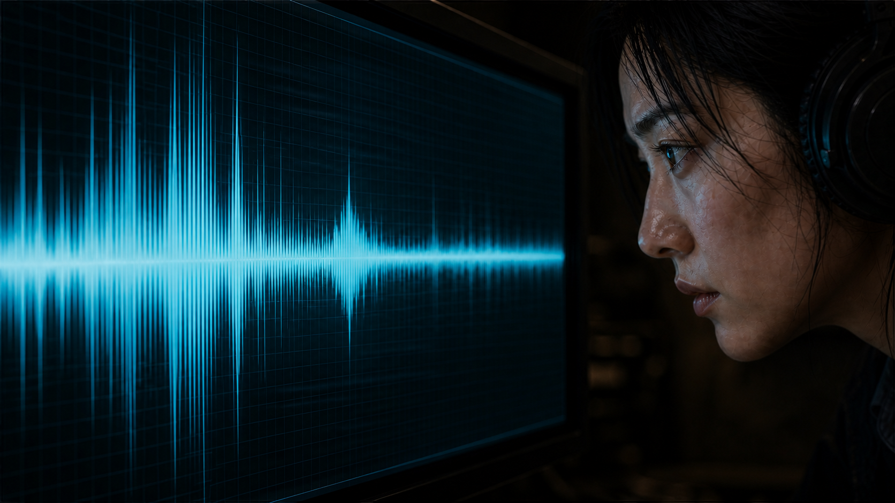
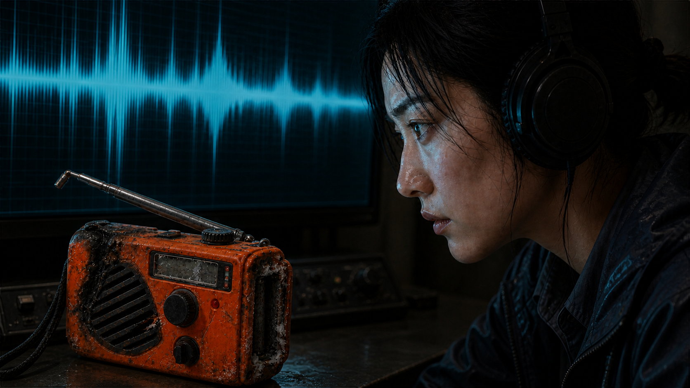
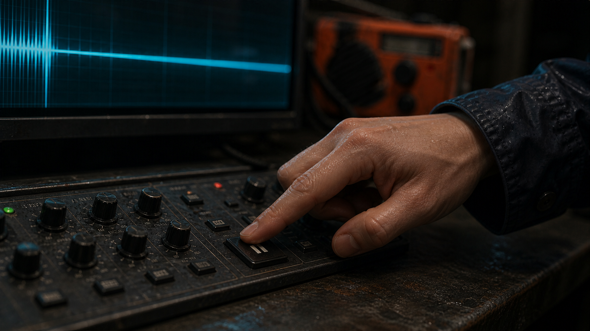
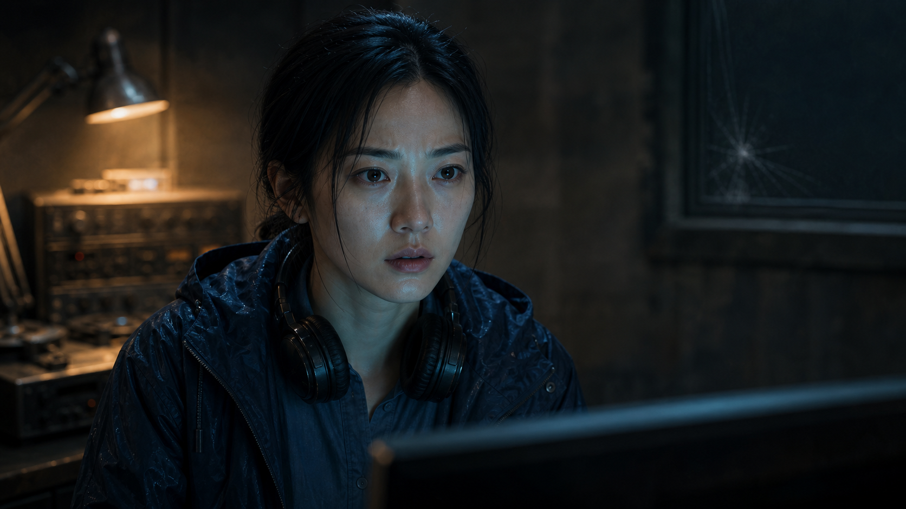
她把右声道单独放大。
一个模糊男声从噪声里露出半句。
许潮开船的……
许知遥猛地按下暂停。
许知遥这个声音……
How the reference pictures align with the target video — Picture 1 (from Shot 1) aligns with the 0.00-second mark of the target video; Picture 2 (from Shot 2) aligns with the 3.00-second mark of the target video; Picture 3 (from Shot 3) aligns with the 5.50-second mark of the target video; Picture 4 (from Shot 4) aligns with the 8.00-second mark of the target video. integrated_multimodal_description: [Shot 1] Cinematic, live-action, cold cyan monitor glow. A slow push in follows <Picture 1> as the technician enlarges the right channel and a human-shaped waveform begins to emerge. [Shot 2] At 00:03.000, the camera cuts to <Picture 2> and holds a static shot on her listening face while a breathless adolescent male voice (S5) speaks from the radio in off-screen voiceover, with the visible woman's lips completely closed: <d>[Chinese] 开船的……</d> [Shot 3] At 00:05.500, the camera cuts to <Picture 3>; the static shot catches her hand pressing pause in one abrupt motion. [Shot 4] At 00:08.000, the camera cuts to <Picture 4>; a slow push in closes on her recognition as the young woman (S1) whispers: <d>[Chinese] 这个声音……</d> overall_soundscape: Filtered tide hiss narrows into a human breath, a broken syllable emerges, the pause key clicks, and the room drops to electrical silence. non_diegetic_music: A single bowed harmonic rises and stops abruptly.
人工语义审核完成：逐镜动作、出镜人物、画外录音、口型关系、道具连续性和声纹标签已与中文节拍核对。
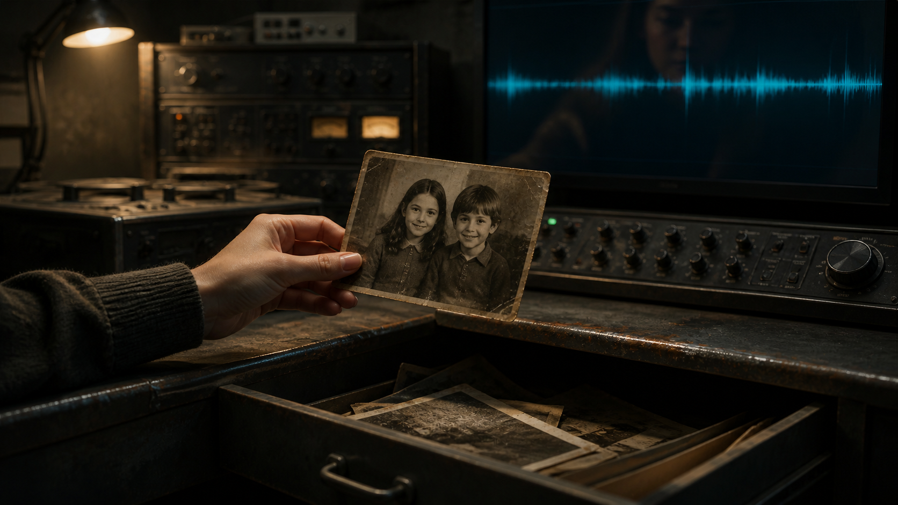
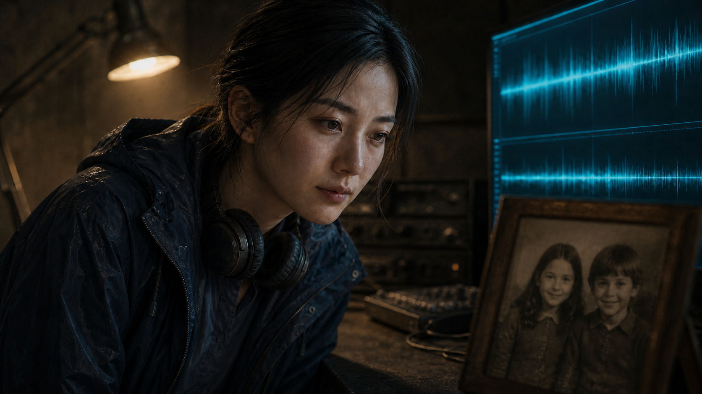
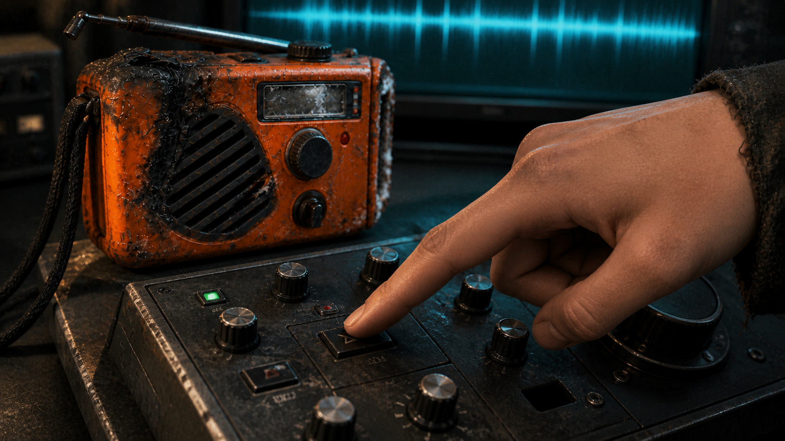
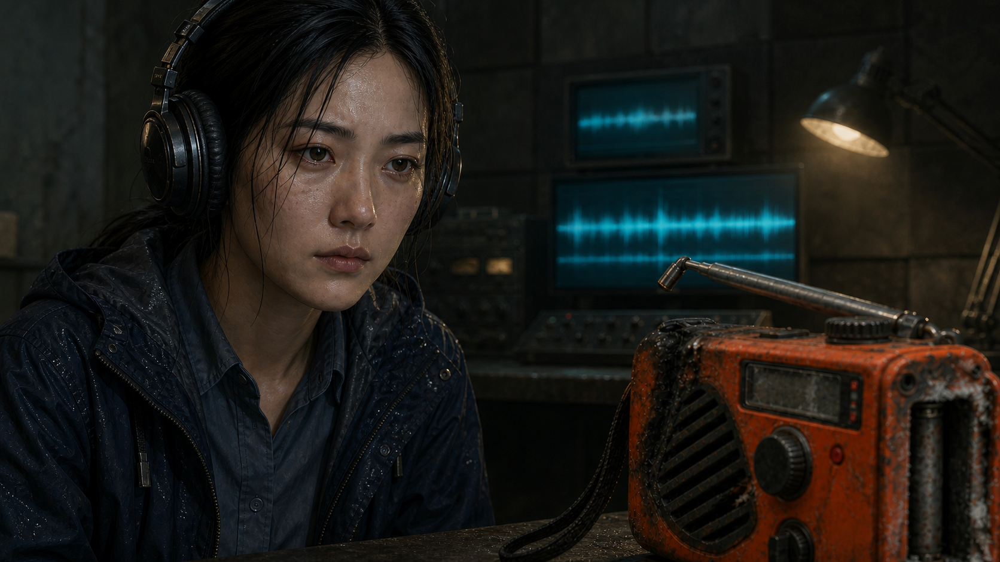
她从抽屉里取出一张兄妹旧照。
许知遥把旧照立在屏幕边。
许知遥哥，是你吗？
她重新播放那段残缺录音。
许潮开船的不是爸。
How the reference pictures align with the target video — Picture 1 (from Shot 1) aligns with the 0.00-second mark of the target video; Picture 2 (from Shot 2) aligns with the 3.50-second mark of the target video; Picture 3 (from Shot 3) aligns with the 6.00-second mark of the target video; Picture 4 (from Shot 4) aligns with the 8.50-second mark of the target video. integrated_multimodal_description: [Shot 1] Cinematic, live-action, intimate cyan-and-amber light. A pan right follows <Picture 1> as the young woman takes a worn sibling photograph from a drawer and sets it beside the monitor. [Shot 2] At 00:03.500, the camera cuts to <Picture 2>; a slow push in closes on her vulnerable face as the young woman (S1) asks: <d>[Chinese] 哥，是你吗？</d> [Shot 3] At 00:06.000, the camera cuts to <Picture 3> and holds a static shot as one finger presses replay beside the fire-scarred radio. [Shot 4] At 00:08.500, the camera cuts to <Picture 4>; the static shot stays on her silent reaction while the breathless adolescent male voice (S5) says in an off-screen voiceover and her lips remain completely closed: <d>[Chinese] 开船的不是爸。</d> overall_soundscape: A drawer slides, old paper touches the desk, the replay control clicks, tide hiss returns, and the recorded adolescent breath stays close and damaged. non_diegetic_music: Soft piano enters on one unresolved minor interval.
人工语义审核完成：逐镜动作、出镜人物、画外录音、口型关系、道具连续性和声纹标签已与中文节拍核对。
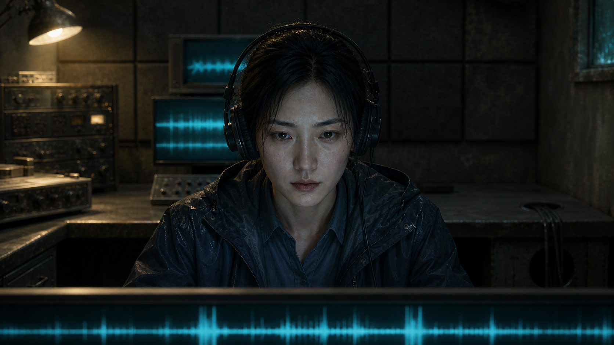
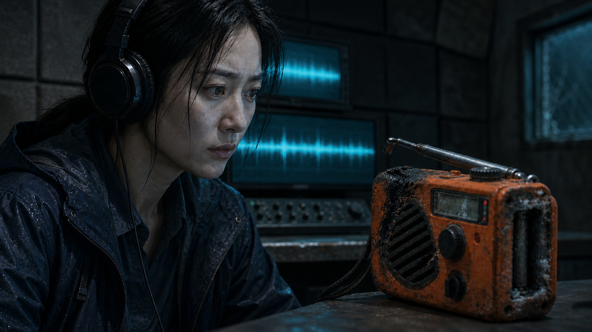
许知遥攥紧耳机线。
许知遥再说一遍。
她提高人声频段。
波形里的最后两个音节变得清楚。
许潮是高嵩。
How the reference pictures align with the target video — Picture 1 (from Shot 1) aligns with the 0.00-second mark of the target video; Picture 2 (from Shot 2) aligns with the 2.50-second mark of the target video; Picture 3 (from Shot 3) aligns with the 4.50-second mark of the target video; Picture 4 (from Shot 4) aligns with the 8.00-second mark of the target video. integrated_multimodal_description: [Shot 1] Cinematic, live-action, cold cyan palette. The static shot follows <Picture 1> as her hand tightens around the headphone cable. [Shot 2] At 00:02.500, the camera cuts to <Picture 2> and holds a static shot on the young technician as the young technician (S1) says: <d>[Chinese] 再说一遍。</d> [Shot 3] At 00:04.500, the camera cuts to <Picture 3>; a slow push in follows her raising the human frequency band until the last two syllables sharpen. [Shot 4] At 00:08.000, the camera cuts to <Picture 4>; a slow push in closes on her stunned face while the breathless adolescent male voice (S5) says in off-screen voiceover, with her lips completely closed: <d>[Chinese] 是高嵩。</d> overall_soundscape: Headphone cable rubs against cloth, a control clicks upward, filtered noise thins, and two clear syllables break through the radio speaker. non_diegetic_music: A low pulse lands beneath the revealed name, then holds.
人工语义审核完成：逐镜动作、出镜人物、画外录音、口型关系、道具连续性和声纹标签已与中文节拍核对。
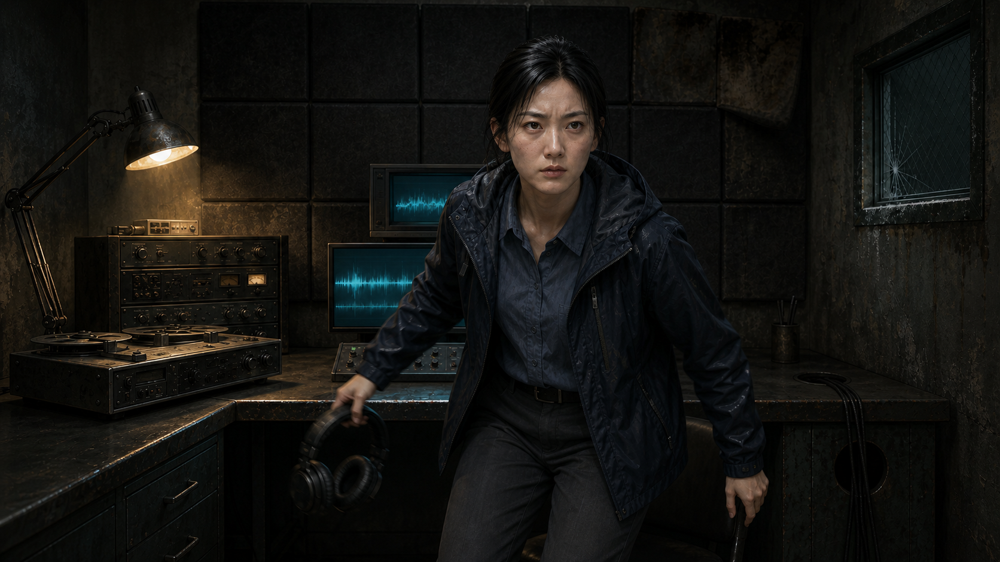
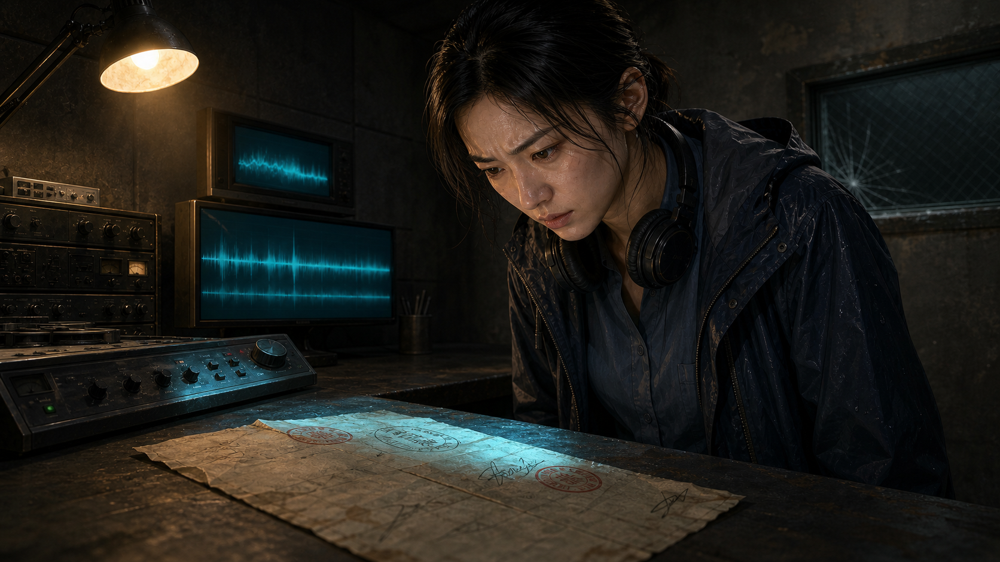
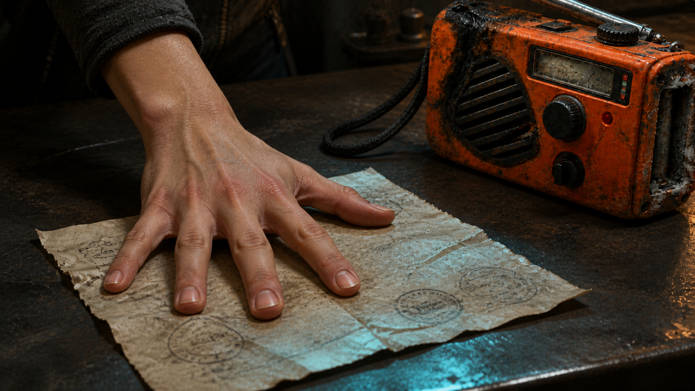
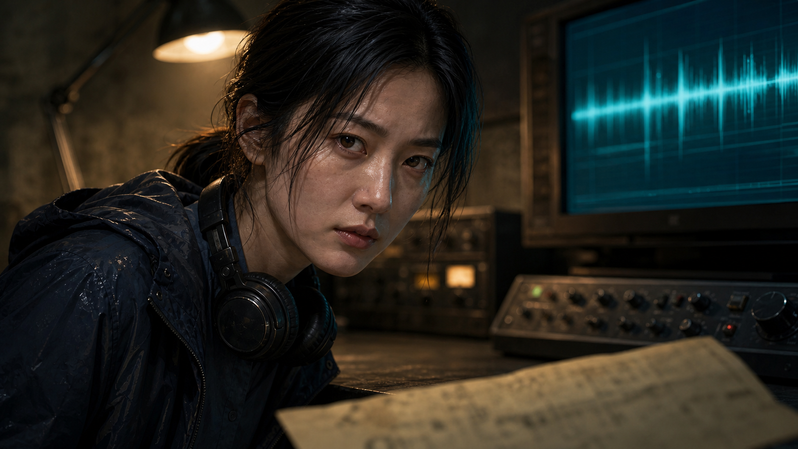
许知遥摘下耳机站起来。
许知遥责任书上写的是爸。
她把责任书压到电台旁。
许知遥你们谁在撒谎？
How the reference pictures align with the target video — Picture 1 (from Shot 1) aligns with the 0.00-second mark of the target video; Picture 2 (from Shot 2) aligns with the 3.00-second mark of the target video; Picture 3 (from Shot 3) aligns with the 6.00-second mark of the target video; Picture 4 (from Shot 4) aligns with the 8.00-second mark of the target video. integrated_multimodal_description: [Shot 1] Cinematic, live-action, divided amber and cyan light. A pull out follows <Picture 1> as the young woman removes her headphones and stands abruptly from the bench. [Shot 2] At 00:03.000, the camera cuts to <Picture 2> and holds a static shot as the young woman (S1) looks toward the old signed document and says: <d>[Chinese] 责任书上写的是爸。</d> [Shot 3] At 00:06.000, the camera cuts to <Picture 3>; the static shot isolates her hand pressing the document beside the damaged radio. [Shot 4] At 00:08.000, the camera cuts to <Picture 4>; a slow push in closes on her demanding face as the young woman (S1) asks: <d>[Chinese] 你们谁在撒谎？</d> overall_soundscape: Headphones hit the bench softly, the chair scrapes back, old paper slaps onto steel, and the monitor fan continues under the tense silence. non_diegetic_music: Low strings sustain with two distant piano strikes.
人工语义审核完成：逐镜动作、出镜人物、画外录音、口型关系、道具连续性和声纹标签已与中文节拍核对。
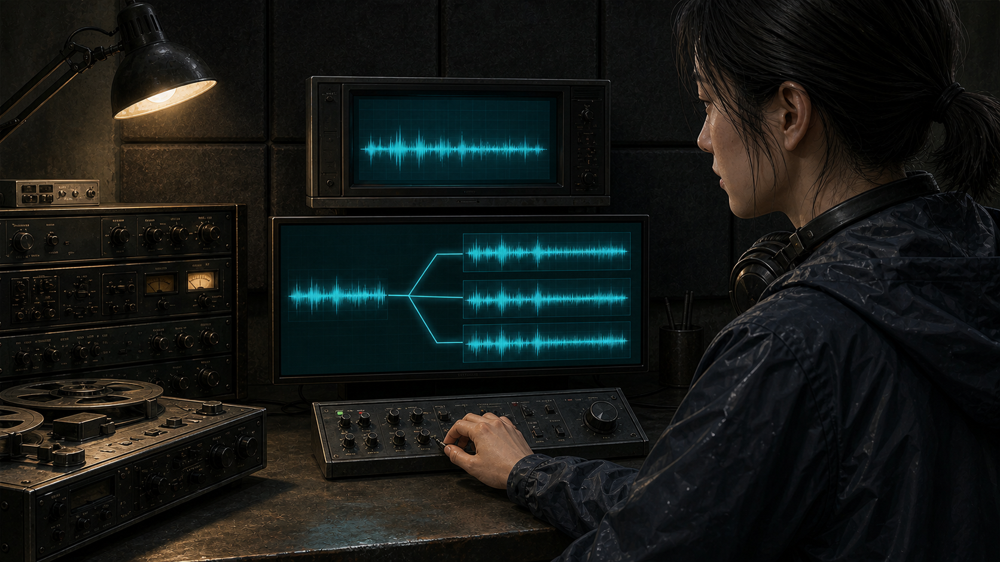
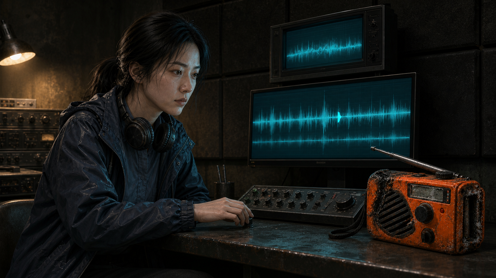
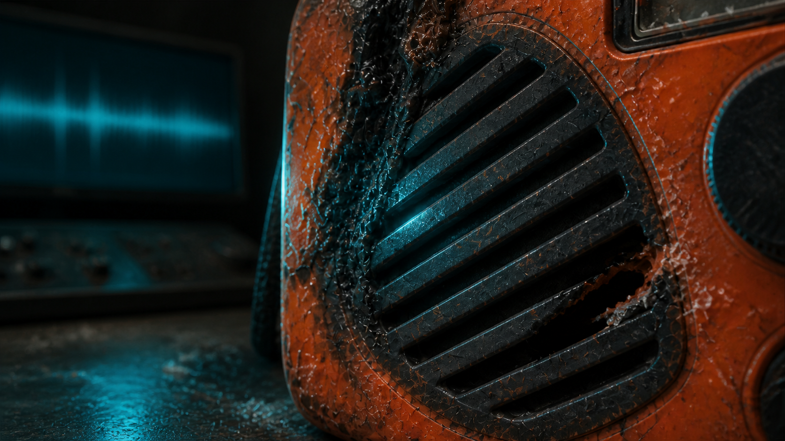
许知遥保存刚刚修出的三段音频副本。
她继续向后拖动未修复的音轨。
电台突然爆出规律蜂鸣。
黄铜钥匙随震动滑到未修复的波形屏下。
How the reference pictures align with the target video — Picture 1 (from Shot 1) aligns with the 0.00-second mark of the target video; Picture 2 (from Shot 2) aligns with the 3.00-second mark of the target video; Picture 3 (from Shot 3) aligns with the 6.00-second mark of the target video; Picture 4 (from Shot 4) aligns with the 8.50-second mark of the target video. integrated_multimodal_description: [Shot 1] Cinematic, live-action, cold cyan-and-amber palette. The static shot follows <Picture 1> as the technician saves three separate copies of the restored audio. [Shot 2] At 00:03.000, the camera cuts to <Picture 2>; a slow push in follows her dragging the recording deeper into the unrepaired waveform. [Shot 3] At 00:06.000, the camera cuts to <Picture 3> and holds a static shot as a regular alarm pulse suddenly bursts from the orange radio speaker. [Shot 4] At 00:08.500, the camera cuts to <Picture 4>; a slow push in follows the blackened brass key sliding under the cyan waveform screen with each vibration, ending before its purpose is explained. overall_soundscape: Save confirmations click softly, the timeline scrub produces filtered tide hiss, a regular electronic alarm bursts through, and metal scrapes lightly across the steel bench in rhythm. non_diegetic_music: A restrained sub-bass pulse begins matching the unexplained alarm interval.
人工语义审核完成：逐镜动作、出镜人物、画外录音、口型关系、道具连续性和声纹标签已与中文节拍核对。
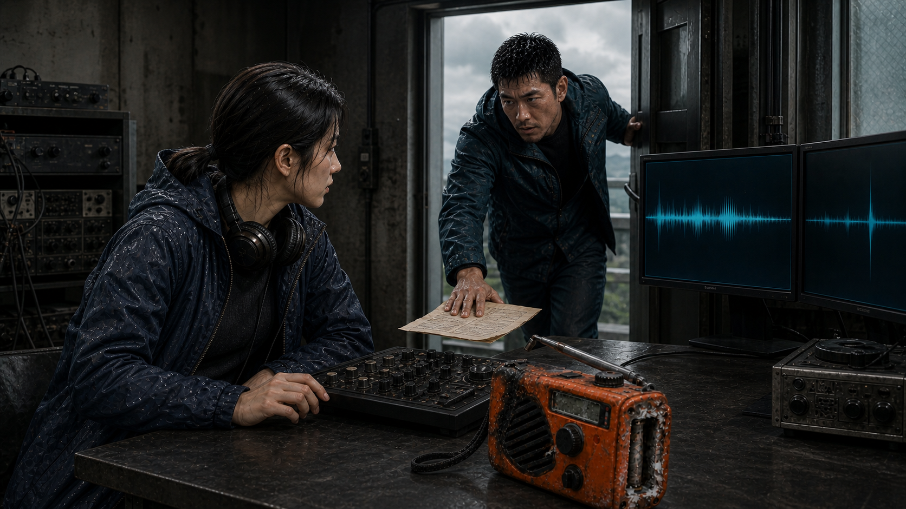
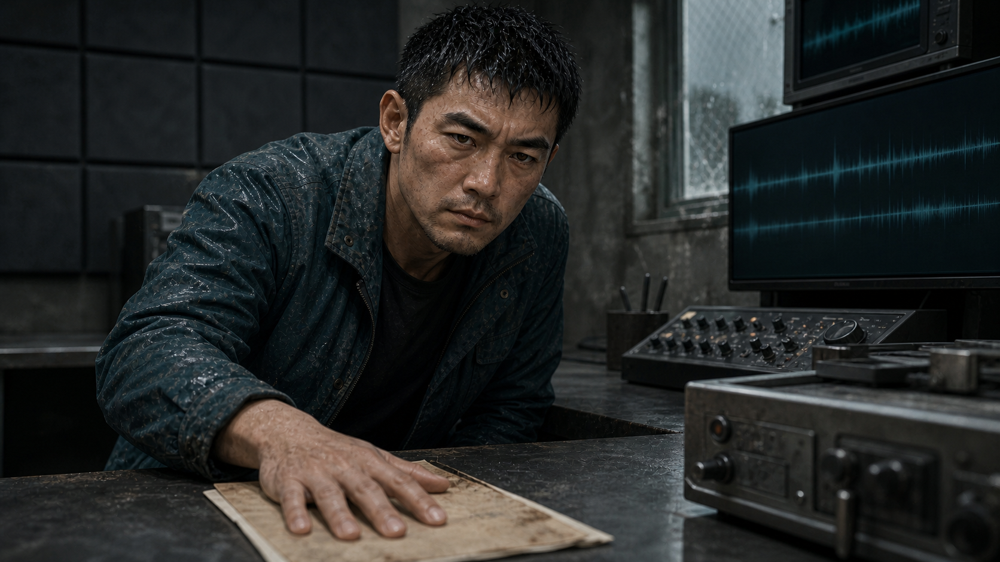

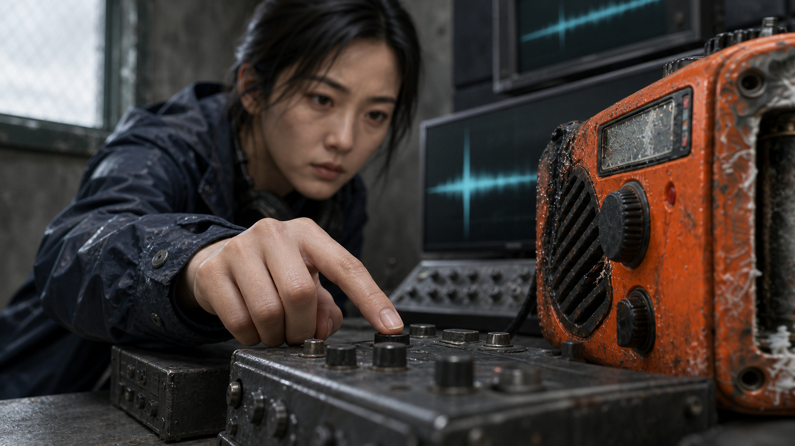
程野收到许知遥连夜发来的报时片段和时间疑点后，带着事故记录快步推门进来，把记录压到滚动的报时波形旁。
程野官方写一点二十分离岸。
许知遥把电台录音拉回蜂鸣处。
许知遥这段报时在一点四十七。
她按下播放。
How the reference pictures align with the target video — Picture 1 (from Shot 1) aligns with the 0.00-second mark of the target video; Picture 2 (from Shot 2) aligns with the 3.00-second mark of the target video; Picture 3 (from Shot 3) aligns with the 6.00-second mark of the target video; Picture 4 (from Shot 4) aligns with the 10.50-second mark of the target video. integrated_multimodal_description: [Shot 1] Cinematic, live-action, cool grey-green and oxidized orange palette. Following <Picture 1>, after receiving the archivist's overnight message about the 01:47 discrepancy, a broad-shouldered male diver pushes through the lab door and plants the accident record he brought beside the rolling waveform as the female archivist turns toward him. The camera uses a tracking shot. [Shot 2] At 00:03.000, the camera cuts to <Picture 2>: the male diver pins the accident record to the bench and states the official departure time without preamble. The camera uses a static shot. The broad-shouldered male diver speaks in a rough low baritone (S2): <d>[Chinese] 官方写一点二十分离岸。</d> [Shot 3] At 00:06.000, the camera cuts to <Picture 3>: the female archivist scrubs the radio recording back to an alarm spike while the male diver studies the waveform across from her. The camera uses a pan right. The slim female audio archivist speaks in a clear, cool, restrained voice (S1): <d>[Chinese] 这段报时在一点四十七。</d> [Shot 4] At 00:10.500, the camera cuts to <Picture 4>: her fingertip presses play beside the scorched orange radio and the waveform begins to move. The camera uses a push in. overall_soundscape: The door opens sharply, paper lands on steel, monitor fans hum, and the damaged radio emits a faint alarm pulse beneath room tone. non_diegetic_music: Low bowed cello with a restrained ticking pulse.
人工语义审核完成：逐镜动作、出镜人物、画外录音、口型关系、道具连续性和声纹标签已与中文节拍核对。
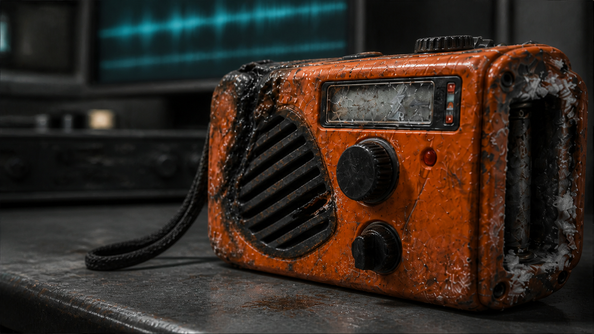
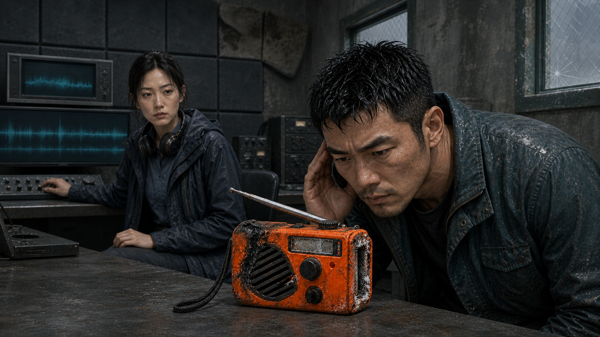
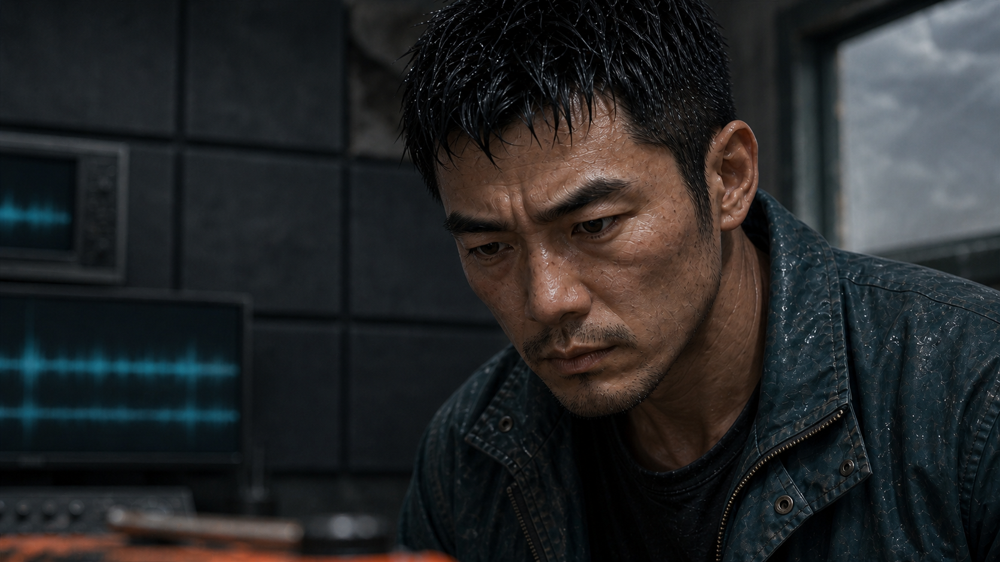
许潮七月十九，一点四十七。
程野靠近扬声器。
规律蜂鸣再次穿过潮声。
程野这是货仓防潮报警器。
How the reference pictures align with the target video — Picture 1 (from Shot 1) aligns with the 0.00-second mark of the target video; Picture 2 (from Shot 2) aligns with the 3.00-second mark of the target video; Picture 3 (from Shot 3) aligns with the 7.00-second mark of the target video. integrated_multimodal_description: [Shot 1] Cinematic, live-action, cool grey-green and oxidized orange palette. Following <Picture 1>, the scorched radio speaker carries a distant teenage time report through salt noise. The camera uses a static shot. A distant teenage male recording speaks in an off-screen voiceover with a bright strained voice (S5), while all visible lips remain completely closed: <d>[Chinese] 七月十九，一点四十七。</d> [Shot 2] At 00:03.000, the camera cuts to <Picture 2>: the male diver bends toward the speaker as the regular alarm pulse cuts through the tide recording; the camera pushes in between both listeners. The camera uses a push in. [Shot 3] At 00:07.000, the camera cuts to <Picture 3>: recognition settles across the male diver's face as he identifies the warehouse moisture alarm. The camera uses a static shot. The broad-shouldered male diver speaks in a rough low baritone (S2): <d>[Chinese] 这是货仓防潮报警器。</d> overall_soundscape: A brittle teenage recording emerges through tide hiss; a regular moisture alarm pulse repeats while clothing brushes the steel bench. non_diegetic_music: Sparse muted piano over a low electronic drone.
人工语义审核完成：逐镜动作、出镜人物、画外录音、口型关系、道具连续性和声纹标签已与中文节拍核对。
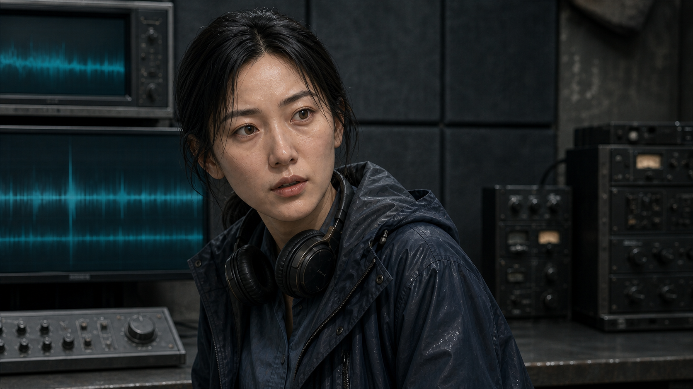
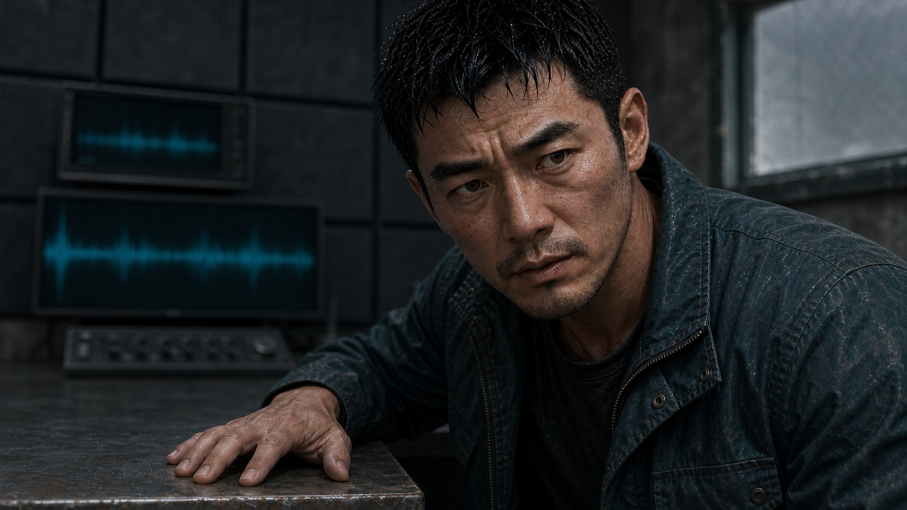
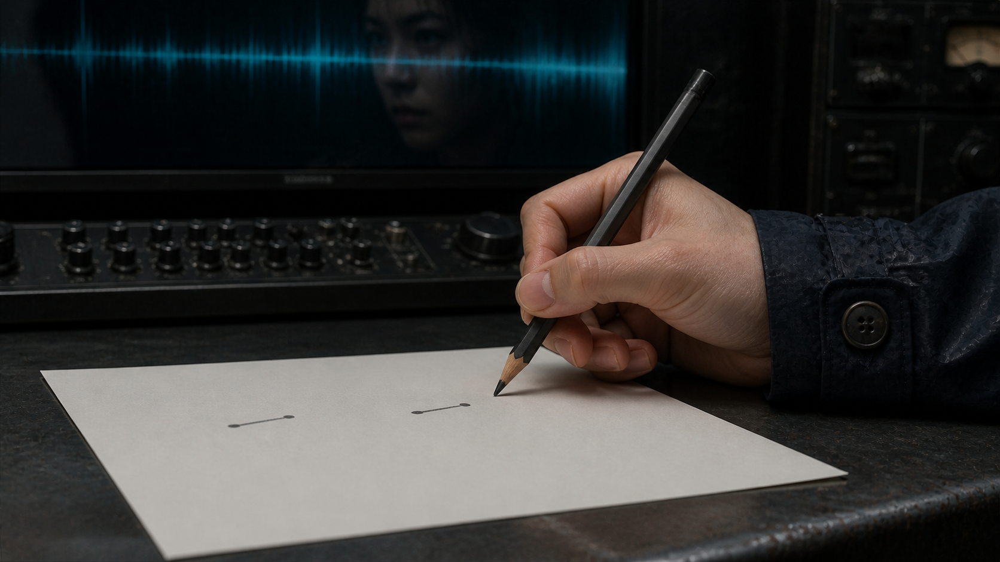
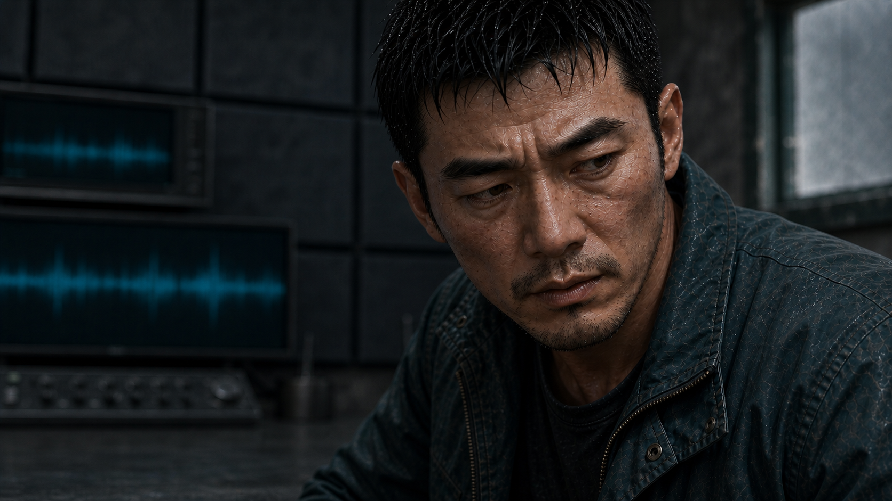
许知遥不是船上的？
程野摇头。
程野每三十秒一次，我从小听到大。
许知遥把两条时间写在同一张纸上。
许知遥哥哥那时还在岸上。
程野至少有一份记录是假的。
How the reference pictures align with the target video — Picture 1 (from Shot 1) aligns with the 0.00-second mark of the target video; Picture 2 (from Shot 2) aligns with the 2.00-second mark of the target video; Picture 3 (from Shot 3) aligns with the 6.00-second mark of the target video; Picture 4 (from Shot 4) aligns with the 10.00-second mark of the target video. integrated_multimodal_description: [Shot 1] Cinematic, live-action, cool grey-green and oxidized orange palette. Following <Picture 1>, the female archivist turns sharply and asks whether the sound came from the boat. The camera uses a static shot. The slim female audio archivist speaks in a clear, cool, restrained voice (S1): <d>[Chinese] 不是船上的？</d> [Shot 2] At 00:02.000, the camera cuts to <Picture 2>: the male diver shakes his head and explains that the alarm has repeated every thirty seconds since childhood. The camera uses a push in. The broad-shouldered male diver speaks in a rough low baritone (S2): <d>[Chinese] 每三十秒一次，我从小听到大。</d> [Shot 3] At 00:06.000, the camera cuts to <Picture 3>: her pencil places two incompatible time marks on the same evidence sheet as she realizes her brother was still ashore. The camera uses a pan right. The slim female audio archivist speaks in a clear, cool, restrained voice (S1): <d>[Chinese] 哥哥那时还在岸上。</d> [Shot 4] At 00:10.000, the camera cuts to <Picture 4>: the male diver states that at least one record is false and then avoids her gaze. The camera uses a static shot. The broad-shouldered male diver speaks in a rough low baritone (S2): <d>[Chinese] 至少有一份记录是假的。</d> overall_soundscape: The alarm pulse repeats every thirty seconds, a pencil scratches paper, and the room falls quiet between short questions. non_diegetic_music: A restrained cello ostinato with isolated piano notes.
人工语义审核完成：逐镜动作、出镜人物、画外录音、口型关系、道具连续性和声纹标签已与中文节拍核对。
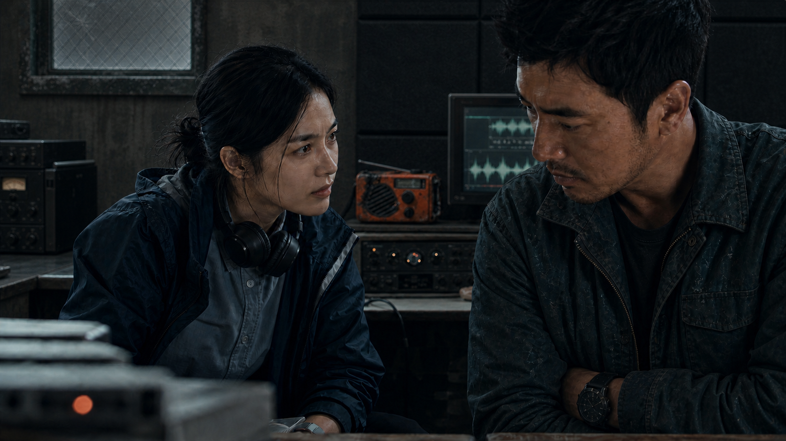
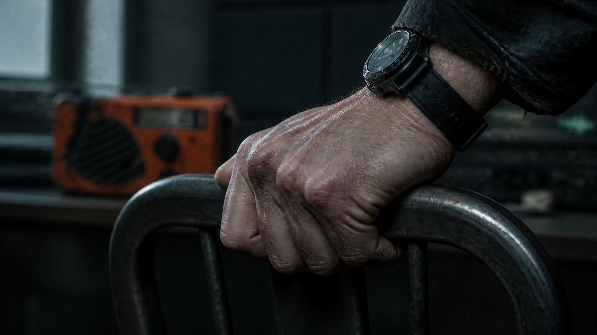
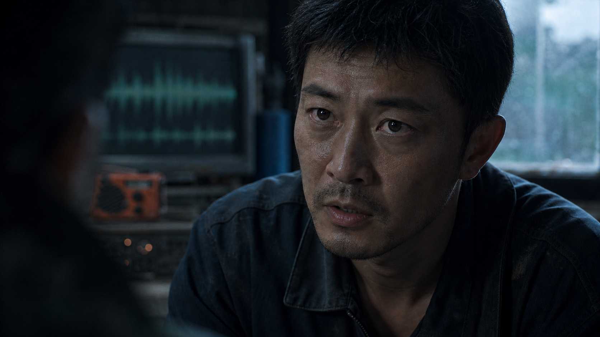
许知遥注意到他的回避。
许知遥你还知道什么？
程野握紧椅背。
程野事故第二天，我捡到过半块船牌。
How the reference pictures align with the target video — Picture 1 (from Shot 1) aligns with the 0.00-second mark of the target video; Picture 2 (from Shot 2) aligns with the 3.50-second mark of the target video; Picture 3 (from Shot 3) aligns with the 6.00-second mark of the target video. integrated_multimodal_description: [Shot 1] Cinematic, live-action, cool grey-green and oxidized orange palette. Following <Picture 1>, the female archivist catches his evasive glance and presses him for what else he knows. The camera uses a push in. The slim female audio archivist speaks in a clear, cool, restrained voice (S1): <d>[Chinese] 你还知道什么？</d> [Shot 2] At 00:03.500, the camera cuts to <Picture 2>: his hand tightens around the chair back before he can answer. The camera uses a static shot. [Shot 3] At 00:06.000, the camera cuts to <Picture 3>: the male diver finally looks up and admits that he found half a burned boat plate the next day. The camera uses a push in. The broad-shouldered male diver speaks in a rough low baritone (S2): <d>[Chinese] 事故第二天，我捡到过半块船牌。</d> overall_soundscape: A chair creaks under tightening fingers, distant traffic fades behind wired glass, and the radio hiss continues at low level. non_diegetic_music: Low sustained strings with a single muted heartbeat-like drum.
人工语义审核完成：逐镜动作、出镜人物、画外录音、口型关系、道具连续性和声纹标签已与中文节拍核对。
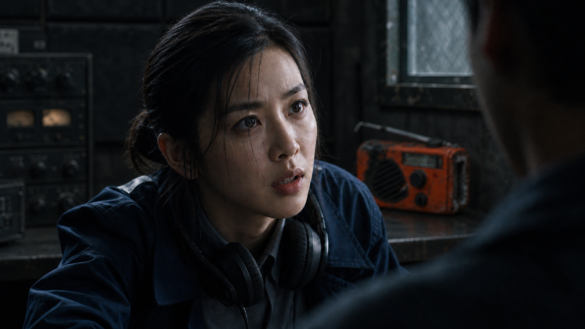
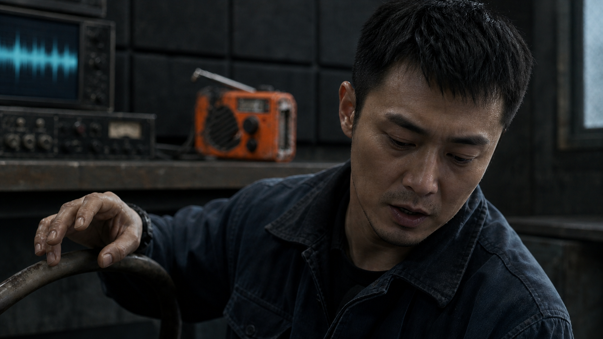
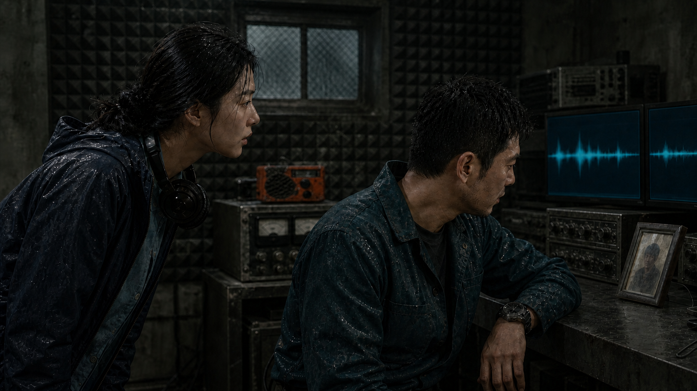
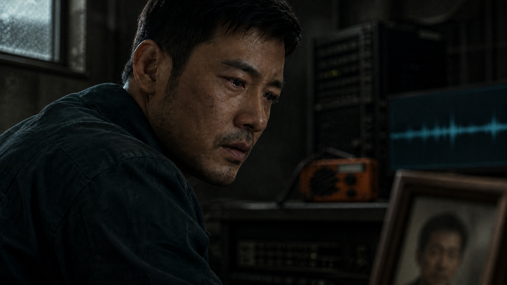
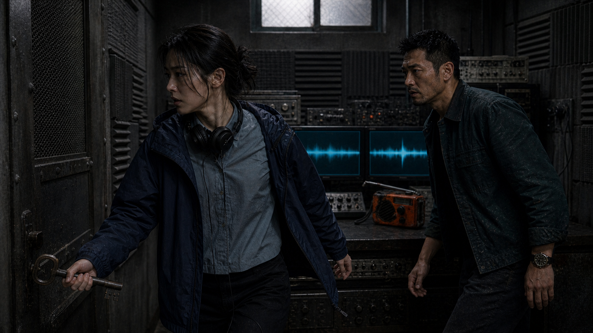
许知遥船牌呢？
程野松开椅背。
程野被我扔回水里了。
许知遥谁让你扔的？
程野看向桌上的父亲旧照。
程野许叔。
许知遥抓起黄铜钥匙。
许知遥去货仓。现在。
How the reference pictures align with the target video — Picture 1 (from Shot 1) aligns with the 0.00-second mark of the target video; Picture 2 (from Shot 2) aligns with the 2.00-second mark of the target video; Picture 3 (from Shot 3) aligns with the 5.50-second mark of the target video; Picture 4 (from Shot 4) aligns with the 8.50-second mark of the target video; Picture 5 (from Shot 5) aligns with the 10.50-second mark of the target video. integrated_multimodal_description: [Shot 1] Cinematic, live-action, cool grey-green and oxidized orange palette. Following <Picture 1>, the female archivist demands to know where the boat plate is. The camera uses a static shot. The slim female audio archivist speaks in a clear, cool, restrained voice (S1): <d>[Chinese] 船牌呢？</d> [Shot 2] At 00:02.000, the camera cuts to <Picture 2>: his hand releases the chair and the camera pulls out as he admits throwing the plate back into the water. The camera uses a pull out. The broad-shouldered male diver speaks in a rough low baritone (S2): <d>[Chinese] 被我扔回水里了。</d> [Shot 3] At 00:05.500, the camera cuts to <Picture 3>: she asks who ordered him to discard it, and he turns toward the old father photograph. The camera uses a pan left. The slim female audio archivist speaks in a clear, cool, restrained voice (S1): <d>[Chinese] 谁让你扔的？</d> [Shot 4] At 00:08.500, the camera cuts to <Picture 4>: the male diver gives the father's familiar title in a voice barely above the room tone. The camera uses a static shot. The broad-shouldered male diver speaks in a rough low baritone (S2): <d>[Chinese] 许叔。</d> [Shot 5] At 00:10.500, the camera cuts to <Picture 5>: the female archivist grabs the blackened brass key and strides for the door, ordering an immediate trip to the warehouse as the diver follows. The camera uses a tracking shot. The slim female audio archivist speaks in a clear, cool, restrained voice (S1): <d>[Chinese] 去货仓。现在。</d> overall_soundscape: The chair releases with a metal tick, paper shifts under a hand, and the brass key scrapes sharply across the bench. non_diegetic_music: A tense cello line rises, then cuts to a held low note.
人工语义审核完成：逐镜动作、出镜人物、画外录音、口型关系、道具连续性和声纹标签已与中文节拍核对。
许知遥快步走到货仓钢门前。
她把黄铜钥匙插进新挂锁。
钥匙无法转动。
许知遥锁是后来换的。
程野推开虚掩的侧门。
How the reference pictures align with the target video — Picture 1 (from Shot 1) aligns with the 0.00-second mark of the target video; Picture 2 (from Shot 2) aligns with the 3.00-second mark of the target video; Picture 3 (from Shot 3) aligns with the 6.50-second mark of the target video; Picture 4 (from Shot 4) aligns with the 8.50-second mark of the target video. integrated_multimodal_description: [Shot 1] Cinematic, live-action, cool grey-green and oxidized orange palette. Following <Picture 1>, both investigators cross the wet yard toward the warehouse steel door, the camera tracking their urgent approach. The camera uses a tracking shot. [Shot 2] At 00:03.000, the camera cuts to <Picture 2>: the brass key enters the new padlock but stops against the unfamiliar mechanism. The camera uses a push in. [Shot 3] At 00:06.500, the camera cuts to <Picture 3>: the female archivist identifies the lock as a later replacement. The camera uses a static shot. The slim female audio archivist speaks in a clear, cool, restrained voice (S1): <d>[Chinese] 锁是后来换的。</d> [Shot 4] At 00:08.500, the camera cuts to <Picture 4>: the male diver finds the partly open side door and pushes it inward. The camera uses a pan right. overall_soundscape: Boots cross wet concrete, brass scrapes inside a new padlock, and a heavy side door groans open. non_diegetic_music: Low tremolo strings with sparse metallic percussion.
人工语义审核完成：逐镜动作、出镜人物、画外录音、口型关系、道具连续性和声纹标签已与中文节拍核对。
两人进入昏暗货仓。
后墙报警器亮起琥珀灯。
蜂鸣与电台录音重叠。
程野就是这个声音。
How the reference pictures align with the target video — Picture 1 (from Shot 1) aligns with the 0.00-second mark of the target video; Picture 2 (from Shot 2) aligns with the 3.00-second mark of the target video; Picture 3 (from Shot 3) aligns with the 7.00-second mark of the target video. integrated_multimodal_description: [Shot 1] Cinematic, live-action, cool grey-green and oxidized orange palette. Following <Picture 1>, the pair enter the dim warehouse together and spread their attention across the unfamiliar interior. The camera uses a tracking shot. [Shot 2] At 00:03.000, the camera cuts to <Picture 2>: the rear alarm lamp blinks in exact rhythm with the damaged radio playback as the camera pushes toward the matching pulses. The camera uses a push in. [Shot 3] At 00:07.000, the camera cuts to <Picture 3>: the male diver confirms that this is the sound preserved in the recording. The camera uses a static shot. The broad-shouldered male diver speaks in a rough low baritone (S2): <d>[Chinese] 就是这个声音。</d> overall_soundscape: The side door echoes shut, a moisture alarm beeps through the cavernous warehouse, and the radio playback overlaps it exactly. non_diegetic_music: A subdued low-frequency drone with a faint ticking motif.
人工语义审核完成：逐镜动作、出镜人物、画外录音、口型关系、道具连续性和声纹标签已与中文节拍核对。
许知遥走到嵌墙消防柜前。
她把钥匙插进消防柜锁孔。
消防柜门弹开。
许知遥它开的是这里。
程野取出发霉的值班日志。
How the reference pictures align with the target video — Picture 1 (from Shot 1) aligns with the 0.00-second mark of the target video; Picture 2 (from Shot 2) aligns with the 2.50-second mark of the target video; Picture 3 (from Shot 3) aligns with the 6.00-second mark of the target video; Picture 4 (from Shot 4) aligns with the 8.00-second mark of the target video. integrated_multimodal_description: [Shot 1] Cinematic, live-action, cool grey-green and oxidized orange palette. Following <Picture 1>, the female archivist crosses toward the embedded fire cabinet while the diver watches the alarm behind her. The camera uses a tracking shot. [Shot 2] At 00:02.500, the camera cuts to <Picture 2>: the same brass key fits the old cabinet lock, turns, and releases the spring-loaded door. The camera uses a push in. [Shot 3] At 00:06.000, the camera cuts to <Picture 3>: the female archivist realizes that the inherited key was meant for this cabinet. The camera uses a static shot. The slim female audio archivist speaks in a clear, cool, restrained voice (S1): <d>[Chinese] 它开的是这里。</d> [Shot 4] At 00:08.000, the camera cuts to <Picture 4>: the male diver removes a mold-stained duty log while the female archivist holds the cabinet open. The camera uses a pan right. overall_soundscape: Footsteps approach the wall cabinet, brass enters an old lock, the latch snaps, and the cabinet door springs outward. non_diegetic_music: Muted piano notes brighten slightly over sustained low strings.
人工语义审核完成：逐镜动作、出镜人物、画外录音、口型关系、道具连续性和声纹标签已与中文节拍核对。
许知遥翻到七月十九日。
许知遥一点二十分，许德海当班。
程野可一点四十七，报警器还在录音里。
许知遥把日志放到电台旁。
许知遥哥哥在这儿，爸却被写在船上。
How the reference pictures align with the target video — Picture 1 (from Shot 1) aligns with the 0.00-second mark of the target video; Picture 2 (from Shot 2) aligns with the 4.00-second mark of the target video; Picture 3 (from Shot 3) aligns with the 8.50-second mark of the target video. integrated_multimodal_description: [Shot 1] Cinematic, live-action, cool grey-green and oxidized orange palette. Following <Picture 1>, the female archivist opens the log to the accident date and reads the official duty time while the diver follows the page. The camera uses a push in. The slim female audio archivist speaks in a clear, cool, restrained voice (S1): <d>[Chinese] 一点二十分，许德海当班。</d> [Shot 2] At 00:04.000, the camera cuts to <Picture 2>: the male diver compares the log with the radio recording and states that the alarm was still sounding twenty-seven minutes later. The camera uses a static shot. The broad-shouldered male diver speaks in a rough low baritone (S2): <d>[Chinese] 可一点四十七，报警器还在录音里。</d> [Shot 3] At 00:08.500, the camera cuts to <Picture 3>: she places the log beside the radio and voices the impossible split between her brother ashore and her father written aboard. The camera uses a pan left. The slim female audio archivist speaks in a clear, cool, restrained voice (S1): <d>[Chinese] 哥哥在这儿，爸却被写在船上。</d> overall_soundscape: Damp pages separate with soft tearing sounds, the alarm continues at fixed intervals, and the radio hiss fills the spaces between voices. non_diegetic_music: A tightening cello ostinato with restrained low piano.
人工语义审核完成：逐镜动作、出镜人物、画外录音、口型关系、道具连续性和声纹标签已与中文节拍核对。
程野蹲在消防柜边。
程野许叔那天不是怕我找到船。
许知遥那他怕什么？
程野抬头看向货仓深处。
程野他当时盯着这里，只说谁都不要再找。
How the reference pictures align with the target video — Picture 1 (from Shot 1) aligns with the 0.00-second mark of the target video; Picture 2 (from Shot 2) aligns with the 4.00-second mark of the target video; Picture 3 (from Shot 3) aligns with the 6.00-second mark of the target video. integrated_multimodal_description: [Shot 1] Cinematic, live-action, cool grey-green and oxidized orange palette. Following <Picture 1>, the crouched diver admits that the father was not afraid of the boat being found, while the camera pulls out to hold both investigators. The camera uses a pull out. The broad-shouldered male diver speaks in a rough low baritone (S2): <d>[Chinese] 许叔那天不是怕我找到船。</d> [Shot 2] At 00:04.000, the camera cuts to <Picture 2>: the female archivist demands to know what the father feared. The camera uses a static shot. The slim female audio archivist speaks in a clear, cool, restrained voice (S1): <d>[Chinese] 那他怕什么？</d> [Shot 3] At 00:06.000, the camera cuts to <Picture 3>: the male diver looks into the warehouse depth and recalls that the father stared there while ordering everyone to stop searching; the camera pushes into the darkness between them. The camera uses a push in. The broad-shouldered male diver speaks in a rough low baritone (S2): <d>[Chinese] 他当时盯着这里，只说谁都不要再找。</d> overall_soundscape: The alarm pulse continues, fabric shifts as the diver crouches, and a distant metal drip echoes from the dark rear of the warehouse. non_diegetic_music: A single low cello note expands into unresolved dark ambience.
人工语义审核完成：逐镜动作、出镜人物、画外录音、口型关系、道具连续性和声纹标签已与中文节拍核对。
货仓侧门被巡场人员发现开启后，高嵩接到通知快步赶来，一把按住刚从消防柜取出的发霉值班日志。
高嵩旧纸受潮，碰坏了没人负责。
许知遥把值班日志从他手下抽走，并与程野带来的事故记录并排。
许知遥一点二十仍值班，一点四十七仍报警。
程野的手指在值班日志与事故记录的时间栏之间移动。
程野可事故记录写他一点二十已经开船。
How the reference pictures align with the target video — Picture 1 (from Shot 1) aligns with the 0.00-second mark of the target video; Picture 2 (from Shot 2) aligns with the 4.00-second mark of the target video; Picture 3 (from Shot 3) aligns with the 8.00-second mark of the target video. integrated_multimodal_description: [Shot 1] Cinematic, live-action, damp warehouse under cool overcast light. Following <Picture 1>, after receiving a patrol report that the side door is open, the controlled middle-aged investor enters quickly and plants one hand firmly on the mold-stained old duty log, preventing anyone from taking it. This is a blurred ruled duty log only: no private seal, no red stamp and no freight or six-drum list exists in this shot. The camera slowly pushes toward his anchored hand and controlled expression. The controlled middle-aged investor speaks in a measured, polished low voice (S3): <d>[Chinese] 旧纸受潮，碰坏了没人负责。</d> The camera uses a push in. [Shot 2] At 00:04.000, the camera cuts to <Picture 2>: the slim female audio archivist pulls the duty log decisively out from beneath his hand and places it beside a plain grey accident record, comparing the two time entries. Neither paper has a seal or stamp, and the hidden freight list has not yet been discovered. The slim female audio archivist speaks in a clear, cool, restrained voice (S1): <d>[Chinese] 一点二十仍值班，一点四十七仍报警。</d> The camera uses a static shot. [Shot 3] At 00:08.000, the camera cuts to <Picture 3>: the broad-shouldered male diver leans toward the table and points between a blurred time row on the mold-stained duty log and the plain accident record. There is absolutely no red mark, private seal or six-drum form. The broad-shouldered male diver speaks in a rough low baritone (S2): <d>[Chinese] 可事故记录写他一点二十已经开船。</d> The camera uses a static shot. overall_soundscape: Moisture alarms repeat through the cavernous warehouse, damp paper drags across the wet table, boots scrape concrete, and distant demolition machinery vibrates through the walls. non_diegetic_music: Tight cello ostinato and muted metallic percussion sustain investigative tension.
人工语义审核完成：提示词已按实际生成记录、图片 QC、中文节拍、人物/道具连续性、口型和声纹标签重写。
高嵩整理被碰皱的袖口。
高嵩十五年前的纸，能说明什么？
许知遥把电台放到日志旁。
许知遥能说明你急着清掉这里。
高嵩我是在替你父亲留体面。
How the reference pictures align with the target video — Picture 1 (from Shot 1) aligns with the 0.00-second mark of the target video; Picture 2 (from Shot 2) aligns with the 4.00-second mark of the target video; Picture 3 (from Shot 3) aligns with the 8.00-second mark of the target video. integrated_multimodal_description: [Shot 1] Cinematic, live-action, damp warehouse under cool overcast light. Following <Picture 1>, the controlled middle-aged investor calmly straightens the wrinkled cuff of his charcoal coat while preserving a faint patronizing smile. The camera slowly pushes toward his fingers, watch and composed face. The controlled middle-aged investor speaks in a measured, polished low voice (S3): <d>[Chinese] 十五年前的纸，能说明什么？</d> The camera uses a push in. [Shot 2] At 00:04.000, the camera cuts to <Picture 2>: the slim female audio archivist deliberately places the scorched orange emergency radio beside the separate mold-stained duty log and watches the investor off-screen for a reaction. The camera holds her hand, both objects and her analytical face. The slim female audio archivist speaks in a clear, cool, restrained voice (S1): <d>[Chinese] 能说明你急着清掉这里。</d> The camera uses a static shot. [Shot 3] At 00:08.000, the camera cuts to <Picture 3>: the controlled middle-aged investor keeps his faint smile while his eyes harden, defining the threat as protection of her father's dignity. The camera remains static on his face. The controlled middle-aged investor speaks in a measured, polished low voice (S3): <d>[Chinese] 我是在替你父亲留体面。</d> The camera uses a static shot. overall_soundscape: Moisture alarms repeat through the cavernous warehouse, coat fabric shifts, the radio touches the wet table, and distant demolition machinery vibrates through the walls. non_diegetic_music: Tight cello ostinato and muted metallic percussion sustain investigative tension.
人工语义审核完成：提示词已按实际生成记录、图片 QC、中文节拍、人物/道具连续性、口型和声纹标签重写。
他把责任书推到许知遥面前。
高嵩签名是他的，责任也是他的。
许知遥拿起责任书。
许知遥一点四十七，他不在船上。
高嵩录音修出来什么，全凭你说。
How the reference pictures align with the target video — Picture 1 (from Shot 1) aligns with the 0.00-second mark of the target video; Picture 2 (from Shot 2) aligns with the 4.00-second mark of the target video; Picture 3 (from Shot 3) aligns with the 8.00-second mark of the target video. integrated_multimodal_description: [Shot 1] Cinematic, live-action, damp warehouse under cool overcast light. Following <Picture 1>, the controlled middle-aged investor slides the water-damaged responsibility document across the wet table toward the slim female audio archivist, using the paper as quiet pressure while she refuses to yield. The camera slowly pushes along his moving hand toward both faces. The controlled middle-aged investor speaks in a measured, polished low voice (S3): <d>[Chinese] 签名是他的，责任也是他的。</d> The camera uses a push in. [Shot 2] At 00:04.000, the camera cuts to <Picture 2>: the slim female audio archivist lifts the document in both hands and checks the blurred timestamp area line by line. The camera remains static on her precise eye movement and natural paper grip. The slim female audio archivist speaks in a clear, cool, restrained voice (S1): <d>[Chinese] 一点四十七，他不在船上。</d> The camera uses a static shot. [Shot 3] At 00:08.000, the camera cuts to <Picture 3>: the archivist and broad-shouldered male diver stand beside the scorched orange radio, both mouths completely closed as they hear the investor dismiss the repaired recording. The camera holds both reactions and the radio. The controlled middle-aged investor says only in an off-screen voiceover in a measured, polished low voice (S3): <d>[Chinese] 录音修出来什么，全凭你说。</d> The investor remains outside the frame. The camera uses a static shot. overall_soundscape: Moisture alarms repeat through the cavernous warehouse, damp paper slides across the table, the radio emits a faint hiss, and distant demolition machinery vibrates through the walls. non_diegetic_music: Tight cello ostinato and muted metallic percussion sustain investigative tension.
人工语义审核完成：提示词已按实际生成记录、图片 QC、中文节拍、人物/道具连续性、口型和声纹标签重写。
程野挡在电台前。
程野报警器不会替她撒谎。
货仓外传来拆迁设备启动声。
高嵩转身走向门口。
高嵩我给你们十分钟。
高嵩遗物交给我，旧事到此为止。
How the reference pictures align with the target video — Picture 1 (from Shot 1) aligns with the 0.00-second mark of the target video; Picture 2 (from Shot 2) aligns with the 4.00-second mark of the target video; Picture 3 (from Shot 3) aligns with the 7.50-second mark of the target video. integrated_multimodal_description: [Shot 1] Cinematic, live-action, damp warehouse under cool overcast light. Following <Picture 1>, the broad-shouldered male diver steps protectively in front of the scorched orange radio, using his shoulders and forearm to block access without touching it. The camera slowly pushes toward his guarding arm, the radio and his restrained anger. The broad-shouldered male diver speaks in a rough low baritone (S2): <d>[Chinese] 报警器不会替她撒谎。</d> The camera uses a push in. [Shot 2] At 00:04.000, the camera cuts to <Picture 2>: heavy demolition machinery starts outside and vibrates the wet floor. The controlled middle-aged investor turns away from the table and walks toward the open riverside doorway with deliberate urgency. The camera pans right with his movement; no machine enters the warehouse. The camera uses a pan right. [Shot 3] At 00:07.500, the camera cuts to <Picture 3>: the investor pauses at the doorway and looks back over his shoulder, remaining almost polite while his eyes carry a direct threat. The camera holds his three-quarter profile. The controlled middle-aged investor speaks in a measured, polished low voice (S3): <d>[Chinese] 我给你们十分钟。</d> He continues in the same voice (S3): <d>[Chinese] 遗物交给我，旧事到此为止。</d> The camera uses a static shot. overall_soundscape: Moisture alarms repeat through the cavernous warehouse, damp paper shifts, boots scrape concrete, and demolition machinery starts outside with a heavy low vibration. non_diegetic_music: Tight cello ostinato and muted metallic percussion sustain investigative tension.
人工语义审核完成：提示词已按实际生成记录、图片 QC、中文节拍、人物/道具连续性、口型和声纹标签重写。
他走出货仓接起电话。
程野重新蹲到消防柜前。
他从夹层抽出油纸包裹的清单。
程野他怕的不是电台，是这个。
How the reference pictures align with the target video — Picture 1 (from Shot 1) aligns with the 0.00-second mark of the target video; Picture 2 (from Shot 2) aligns with the 3.50-second mark of the target video. integrated_multimodal_description: [Shot 1] Cinematic, live-action, cool grey-green and oxidized orange palette. Following <Picture 1>, the controlled middle-aged male investor in a charcoal coat exits the damp abandoned riverside warehouse through the open doorway while answering his phone. As he leaves, the broad-shouldered male diver in dark weathered workwear urgently crouches again at the old fire cabinet and begins searching it. The camera uses a tracking shot and keeps the diver as the primary subject. [Shot 2] At 00:03.500, the camera cuts to <Picture 2>: the broad-shouldered male diver in dark weathered workwear pulls an oil-paper-wrapped list from a concealed inner compartment beside the battered orange emergency radio. The camera uses a static shot. The broad-shouldered male diver speaks in a rough low baritone (S2): <d>[Chinese] 他怕的不是电台，是这个。</d> overall_soundscape: Moisture alarms repeat through the cavernous warehouse, damp paper shifts, boots scrape concrete, and distant demolition machinery vibrates through the walls. non_diegetic_music: Tight cello ostinato and muted metallic percussion sustain investigative tension.
人工语义审核完成：提示词已按实际生成记录、图片 QC、中文节拍、人物/道具连续性、画外录音、口型和声纹标签核对。
许知遥把高嵩私章与六行数量拍进手机。
许知遥先留副本。
许知遥把黄铜钥匙放到清单旁。
程野查看钥匙环上的两道压痕。
程野这不像普通磨损。
How the reference pictures align with the target video — Picture 1 (from Shot 1) aligns with the 0.00-second mark of the target video; Picture 2 (from Shot 2) aligns with the 3.50-second mark of the target video; Picture 3 (from Shot 3) aligns with the 7.00-second mark of the target video. integrated_multimodal_description: [Shot 1] Cinematic, live-action, cool grey-green and oxidized orange palette. Following <Picture 1>, the slim female audio archivist in a navy rain jacket and headphones uses her smartphone to photograph the recovered oil-paper evidence list, capturing its six-row layout and one private seal while all written content remains unreadable. Gao Song is not physically present. The camera uses a static shot. The slim female audio archivist speaks in a clear, cool, restrained voice (S1): <d>[Chinese] 先留副本。</d> [Shot 2] At 00:03.500, the camera cuts to <Picture 2>: the slim female audio archivist places an old brass boat key beside the oil-paper list while the broad-shouldered male diver in dark weathered workwear lifts and turns its oval ring to inspect two parallel pressure marks. The camera uses a tracking shot. [Shot 3] At 00:07.000, the camera cuts to <Picture 3>: the broad-shouldered male diver holds the same brass key near eye level, examining exactly two short irregular compression dents in the oval ring. The camera uses a static shot. The broad-shouldered male diver speaks in a rough low baritone (S2): <d>[Chinese] 这不像普通磨损。</d> overall_soundscape: Moisture alarms repeat through the cavernous warehouse, damp paper shifts, boots scrape concrete, and distant demolition machinery vibrates through the walls. non_diegetic_music: Tight cello ostinato and muted metallic percussion sustain investigative tension.
人工语义审核完成：提示词已按实际生成记录、图片 QC、中文节拍、人物/道具连续性、画外录音、口型和声纹标签核对。
许知遥抱着电台快步回到修复台前。
她插入已经保存的原始副本。
许知遥蜂鸣之后还有人声。
程野关上房门。
许知遥提高蜂鸣后的低频人声。
许潮爸被他们按在货仓里。
How the reference pictures align with the target video — Picture 1 (from Shot 1) aligns with the 0.00-second mark of the target video; Picture 2 (from Shot 2) aligns with the 3.50-second mark of the target video; Picture 3 (from Shot 3) aligns with the 6.50-second mark of the target video; Picture 4 (from Shot 4) aligns with the 10.00-second mark of the target video. integrated_multimodal_description: [Shot 1] Cinematic, live-action, cool grey-green and oxidized orange palette. Following <Picture 1>, the slim female audio archivist in a navy rain jacket and headphones urgently sets the battered orange emergency radio on the restoration bench and inserts one saved-source storage card into an external audio reader beside it. The camera uses a tracking shot. [Shot 2] At 00:03.500, the camera cuts to <Picture 2>: the slim female audio archivist presses one headphone cup to her ear and locks her gaze on a cyan waveform where a large beep peak is followed by a faint low-frequency voice trace. The camera uses a static shot. The slim female audio archivist speaks in a clear, cool, restrained voice (S1): <d>[Chinese] 蜂鸣之后还有人声。</d> [Shot 3] At 00:06.500, the camera cuts to <Picture 3>: the broad-shouldered male diver in dark weathered workwear quietly closes the room door in the background while the slim female audio archivist raises one low-frequency gain control and the faint voice trace strengthens after the beep. The camera uses a static shot. [Shot 4] At 00:10.000, the camera cuts to <Picture 4>: the slim female audio archivist and the broad-shouldered male diver hold completely still and silently react to the recovered recording, both visible mouths firmly closed while they stare at the strengthened waveform. The camera uses a push in. The teenage male witness says only in an off-screen recorded voice in a bright, strained tone (S5): <d>[Chinese] 爸被他们按在货仓里。</d> No teenage boy is visible. overall_soundscape: Monitor fans hum, tide hiss moves through the recording, controls click, and the damaged radio pulses beneath the dialogue. non_diegetic_music: Sparse piano notes sit over a low electronic drone and restrained ticking pulse.
人工语义审核完成：提示词已按实际生成记录、图片 QC、中文节拍、人物/道具连续性、画外录音、口型和声纹标签核对。
许知遥的手停在播放键上。
许知遥他在货仓。
程野所以他不可能开船。
录音里传来铁门撞击声。
许德海不能开船！
许潮爸咬着正钥匙，抱着栏杆。
How the reference pictures align with the target video — Picture 1 (from Shot 1) aligns with the 0.00-second mark of the target video; Picture 2 (from Shot 2) aligns with the 3.50-second mark of the target video; Picture 3 (from Shot 3) aligns with the 6.50-second mark of the target video; Picture 4 (from Shot 4) aligns with the 10.00-second mark of the target video. integrated_multimodal_description: [Shot 1] Cinematic, live-action, cool grey-green and oxidized orange palette. Following <Picture 1>, the slim female audio archivist holds one headphone cup while her index finger freezes just above the playback control beside the battered orange radio. The camera uses a static shot. She speaks with tightened breath (S1): <d>[Chinese] 他在货仓。</d> [Shot 2] At 00:03.500, the camera cuts to <Picture 2>: the broad-shouldered male diver leans toward the bench and immediately completes the evidence chain with a compact decisive gesture. The camera uses a static shot. He speaks in a rough low baritone (S2): <d>[Chinese] 所以他不可能开船。</d> [Shot 3] At 00:06.500, the camera cuts to <Picture 3>: one violent metal-impact spike appears on the cyan waveform, followed by a rough recorded voice trace. The slim female audio archivist and the broad-shouldered male diver flinch but remain silent with both mouths fully closed. The camera uses a push in. The older ferryman says only in an off-screen rough, forceful recording (S4): <d>[Chinese] 不能开船！</d> No older man is visible. [Shot 4] At 00:10.000, the camera cuts to <Picture 4>: both visible people keep their mouths closed and look down at the recovered old brass boat key on the console, connecting its two pressure dents to the recorded description. The camera uses a static shot. The teenage male witness says only in an off-screen bright, strained recording (S5): <d>[Chinese] 爸咬着正钥匙，抱着栏杆。</d> No witness or reenactment is visible, and the key never enters a visible mouth. overall_soundscape: Monitor fans hum, tide hiss moves through the recording, controls click, and the damaged radio pulses beneath the dialogue. non_diegetic_music: Sparse piano notes sit over a low electronic drone and restrained ticking pulse.
人工语义审核完成：提示词已按实际生成记录、图片 QC、中文节拍、人物/道具连续性、画外录音、口型和声纹标签核对。
许知遥从修复台前站起来。
许知遥他签字，不等于他开船。
录音远处传来高嵩的喊声。
高嵩拿备用钥匙！
发动机声盖过报警蜂鸣。
许潮船开了。爸还在这里。
许知遥摘下耳机。
许知遥开船的是高嵩。
How the reference pictures align with the target video — Picture 1 (from Shot 1) aligns with the 0.00-second mark of the target video; Picture 2 (from Shot 2) aligns with the 3.50-second mark of the target video; Picture 3 (from Shot 3) aligns with the 7.00-second mark of the target video; Picture 4 (from Shot 4) aligns with the 10.50-second mark of the target video. integrated_multimodal_description: [Shot 1] Cinematic, live-action, cool grey-green and oxidized orange palette. Following <Picture 1>, the slim female audio archivist rises from the restoration bench and speaks with controlled certainty (S1): <d>[Chinese] 他签字，不等于他开船。</d> The camera uses a static shot. [Shot 2] At 00:03.500, the camera cuts to <Picture 2>: the archivist and the broad-shouldered male diver remain silent with lips closed as a distant recorded command appears on the cyan waveform. The camera pushes in. Gao Song says only in an off-screen recording (S3): <d>[Chinese] 拿备用钥匙！</d> Gao Song is not visible. The camera uses a push in. [Shot 3] At 00:07.000, the camera cuts to <Picture 3>: a dense low-frequency engine band expands across and partially buries the alarm spikes. Both visible people remain silent with lips closed. The teenage witness says only in an off-screen recording (S5): <d>[Chinese] 船开了。爸还在这里。</d> No witness is visible. The camera uses a static shot. [Shot 4] At 00:10.500, the camera cuts to <Picture 4>: the slim female audio archivist fully removes her headphones, stands upright and delivers the conclusion alone in frame (S1): <d>[Chinese] 开船的是高嵩。</d> Gao Song is named but is not physically present. The camera uses a static shot. overall_soundscape: Monitor fans hum, tide hiss moves through the recording, controls click, and the damaged radio pulses beneath the dialogue. non_diegetic_music: Sparse piano notes sit over a low electronic drone and restrained ticking pulse.
自动导演底稿：S02 连续节拍，关键帧按需生成前需做视觉复核。
程野把油纸清单摊在责任书旁。
程野六桶溶剂，私章也在。
许知遥还差事故船上的原始联单。
她把音轨继续拖向许潮登船前的空白段。
耳机里突然传来许潮奔向栈桥的脚步声。
How the reference pictures align with the target video — Picture 1 (from Shot 1) aligns with the 0.00-second mark of the target video; Picture 2 (from Shot 2) aligns with the 3.50-second mark of the target video; Picture 3 (from Shot 3) aligns with the 7.00-second mark of the target video. integrated_multimodal_description: [Shot 1] Cinematic, live-action, cool grey-green and oxidized orange palette. Following <Picture 1>, Cheng Ye spreads the damp oil-paper cargo list flat beside the separate responsibility statement and points once to the dark private seal. The camera slowly pushes toward the two pieces of evidence while preserving the face, hands and document layout in the reference. Cheng Ye speaks in a rough low baritone (S2): <d>[Chinese] 六桶溶剂，私章也在。</d> The camera uses a push in. [Shot 2] At 00:03.500, the camera cuts to <Picture 2>: Xu Zhiyao keeps the headphones around her neck, studies the documents without smiling, then raises her eyes toward Cheng Ye off-screen. The camera remains static. Xu Zhiyao speaks in a clear, cool, restrained voice (S1): <d>[Chinese] 还差事故船上的原始联单。</d> Cheng Ye is not visible in this shot. The camera uses a static shot. [Shot 3] At 00:07.000, the camera cuts to <Picture 3>: Xu Zhiyao has the headphones over her ears and drags the audio timeline toward the blank section before Xu Chao boarded. A short silent gap passes, then rapid wet running footsteps emerge in the headphones and a cluster of evenly spaced cyan impact spikes appears after the blank waveform. Xu Zhiyao stops her hand; Cheng Ye leans closer. Both visible people keep their mouths closed. Xu Chao is represented only by the recorded footsteps and is not physically visible. Do not show a pier, flashback or third person. The camera uses a static shot. overall_soundscape: Monitor fans hum, tide hiss moves through the recording, controls click, the damaged radio pulses, and the final shot reveals rapid wet footsteps running toward a wooden pier through the recording only. non_diegetic_music: Sparse piano notes sit over a low electronic drone and restrained ticking pulse; the music thins during the blank gap and resumes after the footsteps appear.
自动导演底稿：S02 连续节拍，关键帧按需生成前需做视觉复核。
为抢在次日九点拆迁前复核并转移剩余湿纸，许知遥与程野连夜返回货仓；程野留在门外备份取证，高嵩快步穿过门口，张开手臂拦住抱着电台离开的许知遥。
高嵩跑这么急，是怕我先找到那张清单？
许知遥我怕的是你把货仓推平。
许知遥把电台收进外套内侧，转身走向门口。
高嵩从文件夹里抽出一页房产资料，递到她面前。
How the reference pictures align with the target video — Picture 1 (from Shot 1) aligns with the 0.00-second mark of the target video; Picture 2 (from Shot 2) aligns with the 5.00-second mark of the target video; Picture 3 (from Shot 3) aligns with the 8.50-second mark of the target video. integrated_multimodal_description: Causal premise: Xu Zhiyao and Cheng Ye returned overnight to verify and move remaining wet evidence before the 09:00 demolition; Cheng Ye stays immediately outside the door as a backup recorder. [Shot 1] Cinematic, live-action, single-lamp night warehouse, cool grey-green and oxidized orange palette. Following <Picture 1>, Xu Zhiyao moves toward the open doorway while cradling the scorched orange radio against her chest. Gao Song quickly steps across the doorway and raises one arm horizontally to block her path without grabbing or touching her. The camera slowly pushes in. Gao Song speaks in a measured, polished low voice (S3): <d>[Chinese] 跑这么急，是怕我先找到那张清单？</d> Xu Zhiyao stops and keeps her lips closed. The camera uses a push in. [Shot 2] At 00:05.000, the camera cuts to <Picture 2>: Xu Zhiyao stands firm with the orange radio protected against her chest and looks toward Gao Song off-screen. The camera remains static. Xu Zhiyao speaks in a clear, cool, restrained voice (S1): <d>[Chinese] 我怕的是你把货仓推平。</d> Gao Song is not visible in this shot. The camera uses a static shot. [Shot 3] At 00:08.500, the camera cuts to <Picture 3>: Xu Zhiyao tucks the orange radio securely inside her rain jacket and turns toward the exit. Gao Song lowers his blocking arm, opens a slim dark folder, withdraws one real-estate document and extends it into her path. Both people keep their mouths closed. The page has no legible writing. Preserve the doorway axis and do not introduce a table, cyan waveform or extra evidence. The camera uses a static shot. overall_soundscape: Moisture alarms repeat through the cavernous warehouse, damp fabric shifts, boots scrape wet concrete, a folder opens, one sheet of paper slides free, and distant demolition machinery vibrates through the walls. non_diegetic_music: Tight cello ostinato and muted metallic percussion sustain investigative tension.
自动导演底稿：S03 连续节拍，关键帧按需生成前需做视觉复核。
高嵩城里一套房，换电台和清单。今晚就签。
许知遥你买得这么急，说明六桶不是笔误。
高嵩收回资料，反手把货仓门关上。
高嵩多出来的溶剂，我没否认。
How the reference pictures align with the target video — Picture 1 (from Shot 1) aligns with the 0.00-second mark of the target video; Picture 2 (from Shot 2) aligns with the 5.00-second mark of the target video; Picture 3 (from Shot 3) aligns with the 10.00-second mark of the target video. integrated_multimodal_description: [Shot 1] Cinematic, live-action, single-lamp night warehouse. Following <Picture 1>, the controlled middle-aged investor extends one real-estate document toward the archivist off-screen while the scorched orange radio remains on the wet table beyond it. The camera slowly pushes toward the page and his coercively calm face. The controlled middle-aged investor speaks in a measured, polished low voice (S3): <d>[Chinese] 城里一套房，换电台和清单。今晚就签。</d> The camera uses a push in. [Shot 2] At 00:05.000, the camera cuts to <Picture 2>: the slim female audio archivist refuses to touch the offered document, holds the investor's gaze and identifies his urgency as proof that six barrels were deliberate. The camera remains static on her controlled refusal. The slim female audio archivist speaks in a clear, cool, restrained voice (S1): <d>[Chinese] 你买得这么急，说明六桶不是笔误。</d> The camera uses a static shot. [Shot 3] At 00:10.000, the camera cuts to <Picture 3>: the investor retracts the document and pulls the heavy steel door shut with his free hand, enclosing the confrontation without losing his smile. The camera holds his face, hand and closing door. The controlled middle-aged investor speaks in a measured, polished low voice (S3): <d>[Chinese] 多出来的溶剂，我没否认。</d> The camera uses a static shot. overall_soundscape: Moisture alarms repeat through the cavernous warehouse, damp paper shifts, boots scrape wet concrete, the steel door groans, and distant demolition machinery vibrates through the walls. non_diegetic_music: Tight cello ostinato and muted metallic percussion sustain investigative tension.
人工语义审核完成：逐镜动作、出镜人物、手机残录、画外声音、口型、道具状态、追逐方向和声纹标签已与中文节拍核对。
许知遥那晚是谁开的船？
高嵩雷打下来，谁开都一样。
许知遥我爸被锁在这儿。
How the reference pictures align with the target video — Picture 1 (from Shot 1) aligns with the 0.00-second mark of the target video; Picture 2 (from Shot 2) aligns with the 3.50-second mark of the target video; Picture 3 (from Shot 3) aligns with the 7.00-second mark of the target video. integrated_multimodal_description: [Shot 1] Cinematic, live-action, single-lamp night warehouse. Following <Picture 1>, the slim female audio archivist immediately presses the investor off-screen to identify who piloted the boat. The camera pushes slowly toward her unwavering face. The slim female audio archivist speaks in a clear, cool, restrained voice (S1): <d>[Chinese] 那晚是谁开的船？</d> The camera uses a push in. [Shot 2] At 00:03.500, the camera cuts to <Picture 2>: the controlled middle-aged investor gives a small indifferent shrug and dismisses the pilot's identity as irrelevant after the lightning strike. The camera remains static on his faint smile. The controlled middle-aged investor speaks in a measured, polished low voice (S3): <d>[Chinese] 雷打下来，谁开都一样。</d> The camera uses a static shot. [Shot 3] At 00:07.000, the camera cuts to <Picture 3>: the archivist keeps her body still and states that her father was locked inside the warehouse, compressing visible anger into the final words. The camera holds her close-up. The slim female audio archivist speaks in a clear, cool, restrained voice (S1): <d>[Chinese] 我爸被锁在这儿。</d> The camera uses a static shot. overall_soundscape: Moisture alarms repeat through the cavernous warehouse, damp paper shifts, boots scrape wet concrete, the steel door groans, and distant demolition machinery vibrates through the walls. non_diegetic_music: Tight cello ostinato and muted metallic percussion sustain investigative tension.
人工语义审核完成：逐镜动作、出镜人物、手机残录、画外声音、口型、道具状态、追逐方向和声纹标签已与中文节拍核对。
高嵩转身拍了拍锈蚀的钢门。
高嵩他后来签了字，因为他知道许潮上了船。
许知遥我哥为什么会在货仓？
高嵩他偷了电台，想学大人报险。
高嵩最后，他把自己送上了船。
How the reference pictures align with the target video — Picture 1 (from Shot 1) aligns with the 0.00-second mark of the target video; Picture 2 (from Shot 2) aligns with the 5.00-second mark of the target video; Picture 3 (from Shot 3) aligns with the 8.00-second mark of the target video; Picture 4 (from Shot 4) aligns with the 11.50-second mark of the target video. integrated_multimodal_description: [Shot 1] Cinematic, live-action, single-lamp night warehouse. Following <Picture 1>, the controlled middle-aged investor turns and pats the rusted steel door with an open hand while imposing his conclusion on the dead father. The camera slowly pushes toward his hand and profile. The controlled middle-aged investor speaks in a measured, polished low voice (S3): <d>[Chinese] 他后来签了字，因为他知道许潮上了船。</d> The camera uses a push in. [Shot 2] At 00:05.000, the camera cuts to <Picture 2>: the slim female audio archivist refuses his diversion and asks why her brother was inside the warehouse. The camera holds her direct eyeline toward him off-screen. The slim female audio archivist speaks in a clear, cool, restrained voice (S1): <d>[Chinese] 我哥为什么会在货仓？</d> The camera uses a static shot. [Shot 3] At 00:08.000, the camera cuts to <Picture 3>: the investor gestures dismissively toward the scorched orange radio on the wet table and describes the teenage witness with open contempt. The camera remains static on his face and the radio below. The controlled middle-aged investor speaks in a measured, polished low voice (S3): <d>[Chinese] 他偷了电台，想学大人报险。</d> The camera uses a static shot. [Shot 4] At 00:11.500, the camera cuts to <Picture 4>: the investor leans a fraction toward the archivist off-screen and deliberately slows the accusation that the teenager put himself aboard. The camera pushes closer as his expression hardens. The controlled middle-aged investor speaks in a measured, polished low voice (S3): <d>[Chinese] 最后，他把自己送上了船。</d> The camera uses a push in. overall_soundscape: Moisture alarms repeat through the cavernous warehouse, damp paper shifts, boots scrape wet concrete, the steel door groans, and distant demolition machinery vibrates through the walls. non_diegetic_music: Tight cello ostinato and muted metallic percussion sustain investigative tension.
人工语义审核完成：逐镜动作、出镜人物、手机残录、画外声音、口型、道具状态、追逐方向和声纹标签已与中文节拍核对。
门外的程野抬起手机，把收音口贴近门缝。
许知遥你连一个不能开口的孩子都要推过去。
高嵩我是在提醒你，查下去，你连最后的家也保不住。
高嵩低头看见门缝下晃动的人影。
高嵩一把拉开货仓门。
How the reference pictures align with the target video — Picture 1 (from Shot 1) aligns with the 0.00-second mark of the target video; Picture 2 (from Shot 2) aligns with the 4.50-second mark of the target video; Picture 3 (from Shot 3) aligns with the 9.50-second mark of the target video. integrated_multimodal_description: [Shot 1] Cinematic, live-action, single-lamp night warehouse. Following <Picture 1>, the slim female audio archivist speaks from inside while the broad-shouldered male diver remains outside the closed steel door and holds a smartphone microphone close to the narrow seam at chest height. The camera stays static across the door boundary, keeping her accusation and his covert recording readable. The slim female audio archivist speaks in a clear, cool, restrained voice (S1): <d>[Chinese] 你连一个不能开口的孩子都要推过去。</d> The camera uses a static shot. [Shot 2] At 00:04.500, the camera cuts to <Picture 2>: the controlled middle-aged investor faces the archivist off-screen, his polite surface thinning as he threatens her last remaining home. The camera holds his eyes and nearly vanished smile. The controlled middle-aged investor speaks in a measured, polished low voice (S3): <d>[Chinese] 我是在提醒你，查下去，你连最后的家也保不住。</d> The camera uses a static shot. [Shot 3] At 00:09.500, the camera cuts to <Picture 3>: the investor notices a moving shadow beneath the door seam, grabs the steel handle and yanks the door open in one abrupt motion. The camera tracks the handle and swinging door without revealing a new person before the cut. The camera uses a tracking shot. overall_soundscape: Moisture alarms repeat through the cavernous warehouse, damp paper shifts, boots scrape wet concrete, the steel door groans, and distant demolition machinery vibrates through the walls. A phone microphone brushes the door seam before the latch snaps open. non_diegetic_music: Tight cello ostinato and muted metallic percussion sustain investigative tension.
人工语义审核完成：逐镜动作、出镜人物、手机残录、画外声音、口型、道具状态、追逐方向和声纹标签已与中文节拍核对。
程野后退两步，手机仍举在胸前。
高嵩录到了什么？
程野够你解释很久。
程野转身跑向候船厅，高嵩立即追了出去。
How the reference pictures align with the target video — Picture 1 (from Shot 1) aligns with the 0.00-second mark of the target video; Picture 2 (from Shot 2) aligns with the 3.50-second mark of the target video; Picture 3 (from Shot 3) aligns with the 6.50-second mark of the target video. integrated_multimodal_description: [Shot 1] Cinematic, live-action, night exterior at the warehouse door. Following <Picture 1>, the broad-shouldered male diver steps back two paces but keeps the smartphone upright at his chest as the controlled middle-aged investor fills the doorway with his smile gone. The camera remains static between them. The controlled middle-aged investor speaks in a measured, polished low voice (S3): <d>[Chinese] 录到了什么？</d> The camera uses a static shot. [Shot 2] At 00:03.500, the camera cuts to <Picture 2>: the diver gives one clipped reply while shifting his weight to turn, keeping the phone secure. The camera holds his face and compact preparation to run. The broad-shouldered male diver speaks in a rough low baritone (S2): <d>[Chinese] 够你解释很久。</d> The camera uses a static shot. [Shot 3] At 00:06.500, the camera cuts to <Picture 3>: the diver turns and sprints across the wet yard toward the waiting hall; the investor immediately runs after him from the warehouse doorway. The tracking camera follows both men without changing their screen direction. The camera uses a tracking shot. overall_soundscape: The steel door bangs open, wet shoes scrape and accelerate across concrete, the phone shifts against fabric, and the warehouse alarm recedes behind them. non_diegetic_music: Fast muted percussion joins the tight cello pulse without resolving it.
人工语义审核完成：逐镜动作、出镜人物、手机残录、画外声音、口型、道具状态、追逐方向和声纹标签已与中文节拍核对。
程野跑下石阶，许知遥抱着电台紧跟在后。
高嵩转身夺过电台，用力摔在石阶上。
橙色外壳裂开，存储板从缝里滑了出来。
高嵩现在，你还剩什么？
许知遥蹲下捡起裂开的电台。
许知遥三份备份。
高嵩停在石阶上，没有再往前走。
许知遥档案修复，从来不在原介质上做。
How the reference pictures align with the target video — Picture 1 (from Shot 1) aligns with the 0.00-second mark of the target video; Picture 2 (from Shot 2) aligns with the 3.50-second mark of the target video; Picture 3 (from Shot 3) aligns with the 7.00-second mark of the target video; Picture 4 (from Shot 4) aligns with the 10.50-second mark of the target video. integrated_multimodal_description: [Shot 1] Cinematic, live-action, wet stone steps beside the old pier at night. Following <Picture 1>, the broad-shouldered male diver runs down the steps and the archivist follows with the scorched orange radio; the controlled middle-aged investor turns, snatches the radio from her and slams it onto the stone. The tracking camera holds all three people and the radio through one continuous action. The camera uses a tracking shot. [Shot 2] At 00:03.500, the camera cuts to <Picture 2>: the cracked orange shell lies on the step as one storage board slides from its seam. The investor stands above it, breath slightly uneven, and forces his smile back. The camera remains static on his face and the broken device below. The controlled middle-aged investor speaks in a measured, polished low voice (S3): <d>[Chinese] 现在，你还剩什么？</d> The camera uses a static shot. [Shot 3] At 00:07.000, the camera cuts to <Picture 3>: the slim female audio archivist crouches, gathers the cracked shell and loose board with controlled hands, and answers without hesitation. The camera holds her calm face and the recovered parts. The slim female audio archivist speaks in a clear, cool, restrained voice (S1): <d>[Chinese] 三份备份。</d> The camera uses a static shot. [Shot 4] At 00:10.500, the camera cuts to <Picture 4>: the investor stops higher on the steps while the archivist fits the loose storage board back inside the broken shell below him. The camera slowly pushes toward her hands and unwavering face. The slim female audio archivist speaks in a clear, cool, restrained voice (S1): <d>[Chinese] 档案修复，从来不在原介质上做。</d> The camera uses a push in. overall_soundscape: Night river wind crosses the stone steps and old pier, wet shoes strike concrete, the damaged radio shell scrapes stone, and distant machinery idles beside the dark warehouse. non_diegetic_music: Low bowed cello and restrained percussion build toward an unresolved pulse.
人工语义审核完成：逐镜动作、出镜人物、手机残录、画外声音、口型、道具状态、追逐方向和声纹标签已与中文节拍核对。
程野你毁掉的，只是我们愿意让你看见的那份。
高嵩转身指向黑暗中的货仓。
高嵩明早九点，拆迁启动。
高嵩里面的湿纸，一张都留不住。
How the reference pictures align with the target video — Picture 1 (from Shot 1) aligns with the 0.00-second mark of the target video; Picture 2 (from Shot 2) aligns with the 5.00-second mark of the target video; Picture 3 (from Shot 3) aligns with the 8.50-second mark of the target video. integrated_multimodal_description: [Shot 1] Cinematic, live-action, wet pier steps at night. Following <Picture 1>, the broad-shouldered male diver steps firmly beside the slim female audio archivist and faces the investor off-screen while she keeps the cracked orange radio low in her hands. The camera remains static on their united position. The broad-shouldered male diver speaks in a rough low baritone (S2): <d>[Chinese] 你毁掉的，只是我们愿意让你看见的那份。</d> The camera uses a static shot. [Shot 2] At 00:05.000, the camera cuts to <Picture 2>: the controlled middle-aged investor turns and points toward the dark warehouse behind him, abandoning polite ambiguity as he announces the demolition time. The camera holds his pointing line and the warehouse silhouette. The controlled middle-aged investor speaks in a measured, polished low voice (S3): <d>[Chinese] 明早九点，拆迁启动。</d> The camera uses a static shot. [Shot 3] At 00:08.500, the camera cuts to <Picture 3>: the investor's eyes lower toward the diver's smartphone just outside the frame as he warns that every wet paper inside will be destroyed. The camera pushes toward his unsmiling face. The controlled middle-aged investor speaks in a measured, polished low voice (S3): <d>[Chinese] 里面的湿纸，一张都留不住。</d> The camera uses a push in. overall_soundscape: Night river wind crosses the stone steps and old pier, wet shoes strike concrete, the damaged radio shell scrapes stone, and distant machinery idles beside the dark warehouse. non_diegetic_music: Low bowed cello and restrained percussion build toward an unresolved pulse.
人工语义审核完成：逐镜动作、出镜人物、手机残录、画外声音、口型、道具状态、追逐方向和声纹标签已与中文节拍核对。
程野你越急，水下那份东西越值得找。
高嵩沿着栈桥快步离开。
许知遥刚才录到了多少？
程野点开手机里的残缺录音。
爆音过后，手机里挤出三个断续词组。
高嵩她的学籍……住处……让他签。
How the reference pictures align with the target video — Picture 1 (from Shot 1) aligns with the 0.00-second mark of the target video; Picture 2 (from Shot 2) aligns with the 4.00-second mark of the target video; Picture 3 (from Shot 3) aligns with the 7.50-second mark of the target video; Picture 4 (from Shot 4) aligns with the 11.00-second mark of the target video. integrated_multimodal_description: [Shot 1] Cinematic, live-action, wet pier steps at night. Following <Picture 1>, the broad-shouldered male diver faces the investor off-screen and deliberately stresses the possibility of evidence underwater, indicating the dark river beyond the railing without entering it. The camera remains static on his restrained gesture and controlled provocation. The broad-shouldered male diver speaks in a rough low baritone (S2): <d>[Chinese] 你越急，水下那份东西越值得找。</d> The camera uses a static shot. [Shot 2] At 00:04.000, the camera cuts to <Picture 2>: the investor walks quickly away along the pier in the deep background while the archivist immediately turns toward the diver off-screen in the foreground. The camera holds both screen directions. The slim female audio archivist speaks in a clear, cool, restrained voice (S1): <d>[Chinese] 刚才录到了多少？</d> The camera uses a static shot. [Shot 3] At 00:07.500, the camera cuts to <Picture 3>: the diver opens the damaged recording on his smartphone. A burst of noise passes and three separated abstract voice clusters appear without readable interface text. The camera tracks closer to the phone while his mouth remains closed. The camera uses a tracking shot. [Shot 4] At 00:11.000, the camera cuts to <Picture 4>: the smartphone speaker emits three distorted fragments while the archivist and diver remain behind it with both mouths fully closed. The investor is not visible and exists only in the phone recording. The controlled middle-aged investor says only through a distorted off-screen phone recording in a measured low voice (S3): <d>[Chinese] 她的学籍……住处……让他签。</d> The camera uses a static shot. overall_soundscape: Night river wind crosses the stone steps and old pier, wet shoes strike concrete, the damaged radio shell scrapes stone, and distant machinery idles beside the dark warehouse. Phone noise breaks into three clipped voice fragments. non_diegetic_music: Low bowed cello and restrained percussion build toward an unresolved pulse.
人工语义审核完成：逐镜动作、出镜人物、手机残录、画外声音、口型、道具状态、追逐方向和声纹标签已与中文节拍核对。
程野根据十五年前自己丢下半块船牌的位置，并结合许潮录音里奔向栈桥的脚步方向，沿防波堤快步跑下消波块，冲向退潮后露出的水线。
他把安全绳扣在坡面的锈环上。
程野知遥，给我十五分钟。
画外音退潮只剩十二分钟，别逞强。
How the reference pictures align with the target video — Picture 1 (from Shot 1) aligns with the 0.00-second mark of the target video; Picture 2 (from Shot 2) aligns with the 4.00-second mark of the target video; Picture 3 (from Shot 3) aligns with the 7.50-second mark of the target video. integrated_multimodal_description: [Shot 1] Cinematic, live-action. Following <Picture 1>, guided by the place where he personally discarded half a boat plate fifteen years ago and the recorded direction of Xu Chao's footsteps toward the pier, the broad-shouldered male diver runs down the wet slope and clips the brass carabiner of his black-and-yellow safety rope into the only rusted ring. His mask is pushed onto his forehead, with one lamp on viewer-left at his right temple and one earpiece in his right ear. The camera uses a tracking shot. [Shot 2] At 00:04.000, the camera cuts to <Picture 2>: the diver keeps the mask on his forehead, checks the right-ear earpiece and regulates his breath before entry. The broad-shouldered male diver speaks in a rough low baritone (S2): <d>[Chinese] 知遥，给我十五分钟。</d> The camera uses a static shot. [Shot 3] At 00:07.500, the camera cuts to <Picture 3>: the diver listens with his mouth completely closed, the same mask, single lamp, right-ear earpiece and safety rope unchanged, while the waterline continues falling. Keep the rope timer unreadable and do not create a second countdown or second lamp. The slim female audio archivist says only through the off-screen connection in a clear, urgent voice (S1): <d>[Chinese] 退潮只剩十二分钟，别逞强。</d> The camera uses a static shot. overall_soundscape: Low-tide water pulls through concrete blocks, a safety line strains and scrapes wet stone, breathing stays close, and the black river moves under cold night wind. non_diegetic_music: Sub-bass swells and distant bowed metal rise slowly beneath the night water.
人工语义审核完成：逐镜动作、水下安全逻辑、证据状态、旧录音/手机残录、出镜人物、闭口要求和 S1–S5 声纹已与中文节拍核对。
程野十五年前，我已经退过一次。
程野戴好面镜，转身滑入黑色江水。
安全绳沿着湿滑混凝土不断向水里移动。
画外音程野，回话。
How the reference pictures align with the target video — Picture 1 (from Shot 1) aligns with the 0.00-second mark of the target video; Picture 2 (from Shot 2) aligns with the 4.00-second mark of the target video; Picture 3 (from Shot 3) aligns with the 8.00-second mark of the target video. integrated_multimodal_description: [Shot 1] Cinematic, live-action. Following <Picture 1>, the diver pauses at the waterline with the mask still on his forehead, the one lamp at his right temple, the right-ear earpiece and safety rope unchanged, and completes the admission he avoided fifteen years earlier. The broad-shouldered male diver speaks in a rough low baritone (S2): <d>[Chinese] 十五年前，我已经退过一次。</d> The camera uses a push in. [Shot 2] At 00:04.000, the camera cuts to <Picture 2>: the diver pulls the mask down over his eyes and nose, keeps the single lamp on the same side, turns and slides frame-right into the black river as the safety rope travels steadily toward frame-left over wet concrete behind him. This is a short free dive: do not add an oxygen tank, snorkel, fins, breathing tube or second rope. The camera uses a pan right. [Shot 3] At 00:08.000, the camera cuts to <Picture 3>: the taut safety line disappears beneath the dark surface; only one faint submerged shadow and one lamp point remain while the diver cannot answer. Do not reveal a clear face or add a tank, snorkel, fins, second lamp or second rope. The slim female audio archivist calls only through the off-screen headset connection in a clear, urgent voice (S1): <d>[Chinese] 程野，回话。</d> The camera uses a static shot. overall_soundscape: Low-tide water pulls through concrete blocks, a safety line strains and scrapes wet stone, breathing stays close, and the black river moves under cold night wind. non_diegetic_music: Sub-bass swells and distant bowed metal rise slowly beneath the night water.
人工语义审核完成：逐镜动作、水下安全逻辑、证据状态、旧录音/手机残录、出镜人物、闭口要求和 S1–S5 声纹已与中文节拍核对。
程野突然浮出水面，双臂抱住一只锈死的金属筒。
程野找到了。
他拖着金属筒爬上混凝土坡面。
程野拧开筒盖。
How the reference pictures align with the target video — Picture 1 (from Shot 1) aligns with the 0.00-second mark of the target video; Picture 2 (from Shot 2) aligns with the 4.00-second mark of the target video. integrated_multimodal_description: [Shot 1] Cinematic, live-action. Following <Picture 1>, the diver bursts through the black surface with heavy breath and locks both arms around one sealed dark-brown steel canister with two low ribs, a fixed left base and a thick closed threaded lid at frame-right. No paper is visible. The broad-shouldered male diver speaks through strained breath in a rough low baritone (S2): <d>[Chinese] 找到了。</d> The camera uses a push in. [Shot 2] At 00:04.000, the camera cuts to <Picture 2>: the soaked diver pushes the mask onto his forehead, braces the exact same canister between his knees and loosens the frame-right threaded lid by only about one centimetre. The lid remains attached and no paper appears; the diver stays silent. The camera uses a pan right. overall_soundscape: Low-tide water pulls through concrete blocks, a safety line strains and scrapes wet stone, breathing stays close, and the black river moves under cold night wind. non_diegetic_music: Sub-bass swells and distant bowed metal rise slowly beneath the night water.
人工语义审核完成：逐镜动作、水下安全逻辑、证据状态、旧录音/手机残录、出镜人物、闭口要求和 S1–S5 声纹已与中文节拍核对。
一卷湿透的载货联单从筒里滑出。
画外音别展开，马上带回来。
程野筒盖上有许潮的潮记。
程野抱起金属筒，沿消波块跑回岸上。
How the reference pictures align with the target video — Picture 1 (from Shot 1) aligns with the 0.00-second mark of the target video; Picture 2 (from Shot 2) aligns with the 4.00-second mark of the target video; Picture 3 (from Shot 3) aligns with the 7.00-second mark of the target video. integrated_multimodal_description: [Shot 1] Cinematic, live-action. Following <Picture 1>, the same canister is open and its only lid is fully removed; one wet manifest roll slides only partly out and remains inside while the diver supports it without unfolding it. He keeps his mouth completely closed. The slim female audio archivist gives an order only through the off-screen headset connection in a clear urgent voice (S1): <d>[Chinese] 别展开，马上带回来。</d> Do not show her, a second lid, a second canister, duplicate paper or readable text. The camera uses a static shot. [Shot 2] At 00:04.000, the camera cuts to <Picture 2>: the diver raises the same detached lid beneath his single right-temple lamp and finds one irregular hand-scratched half-moon mark, never a full circle, power icon, logo, letter or number. He alone speaks with natural lip movement in a newly trembling rough voice (S2): <d>[Chinese] 筒盖上有许潮的潮记。</d> Keep the manifest and the female archivist out of frame. The camera uses a push in. [Shot 3] At 00:07.000, the camera cuts to <Picture 3>: the only manifest has already been returned completely inside the same canister and the same lid has been tightened closed. With no paper visible outside, the diver hugs the sealed canister and runs uphill over the wet wave blocks toward shore while the safety rope trails behind. The camera uses a tracking shot. overall_soundscape: Low-tide water pulls through concrete blocks, a safety line strains and scrapes wet stone, breathing stays close, and the black river moves under cold night wind. non_diegetic_music: Sub-bass swells and distant bowed metal rise slowly beneath the night water.
人工语义审核完成：逐镜动作、水下安全逻辑、证据状态、旧录音/手机残录、出镜人物、闭口要求和 S1–S5 声纹已与中文节拍核对。
许知遥按下修复软件的播放键。
扬声器先传出发动机声，随后响起沉闷爆音。
许潮高嵩开的船，他要赶在检查前运走六桶。
程野把载货联单放到显示器旁。
许知遥戴上薄手套，慢慢展开潮湿的纸张。
How the reference pictures align with the target video — Picture 1 (from Shot 1) aligns with the 0.00-second mark of the target video; Picture 2 (from Shot 2) aligns with the 3.50-second mark of the target video; Picture 3 (from Shot 3) aligns with the 8.00-second mark of the target video. integrated_multimodal_description: [Shot 1] Cinematic, live-action. Following <Picture 1>, the archivist keeps her mouth closed and presses one unlabeled playback control beside the same cracked, unrepaired orange radio. The cyan screen shows only a dense engine waveform band followed by one blunt overload spike, without text, digits, timecode or readable UI. The camera uses a static shot. [Shot 2] At 00:03.500, the camera cuts to <Picture 2>: the archivist listens with her mouth completely closed beside the unchanged cracked radio as the teenage witness speaks only from the damaged old recording. The teenage male witness says in a fast, low, off-screen recorded voice (S5): <d>[Chinese] 高嵩开的船，他要赶在检查前运走六桶。</d> Do not show the witness, investor, child, portrait, reflection or reenactment. The camera uses a static shot. [Shot 3] At 00:08.000, the camera cuts to <Picture 3>: with her thin conservation gloves already on, the archivist begins unfolding exactly one damp curled manifest as the diver places it beside the monitor. The sheet is not sealed or bagged; keep hands natural and show no duplicate paper, readable writing, phone or responsibility statement. The camera uses a static shot. overall_soundscape: Monitor fans hum in the pre-dawn lab. The cracked radio reproduces tide hiss, engine noise, recovered teenage speech and distant child crying; controls click and damp paper shifts. No present-day person speaks except for the explicitly scripted dialogue. non_diegetic_music: Sparse piano notes sit over a low electronic drone and a restrained ticking pulse.
人工语义审核完成：逐镜动作、水下安全逻辑、证据状态、旧录音/手机残录、出镜人物、闭口要求和 S1–S5 声纹已与中文节拍核对。
许知遥六行编号，和货仓清单一模一样。
程野右下角，是他的私章。
许知遥把录音倒回十秒。
许潮电台藏在救生圈里，位置我报过了。
录音深处传来孩子连续的哭声。
许潮舱里还有孩子。
How the reference pictures align with the target video — Picture 1 (from Shot 1) aligns with the 0.00-second mark of the target video; Picture 2 (from Shot 2) aligns with the 4.00-second mark of the target video; Picture 3 (from Shot 3) aligns with the 7.00-second mark of the target video; Picture 4 (from Shot 4) aligns with the 11.50-second mark of the target video. integrated_multimodal_description: [Shot 1] Cinematic, live-action. Following <Picture 1>, the archivist traces exactly six aligned blurred row structures on the only damp, unfolded but not fully flattened manifest. She alone speaks with natural lip movement in a clear, cool, restrained voice (S1): <d>[Chinese] 六行编号，和货仓清单一模一样。</d> Keep every row unreadable and do not create a second sheet. The camera uses a push in. [Shot 2] At 00:04.000, the camera cuts to <Picture 2>: the diver points to the dark-purple chipped-corner square seal with its short leftward bleed at the lower-right corner of the same manifest. He alone speaks with natural lip movement in a rough low baritone (S2): <d>[Chinese] 右下角，是他的私章。</d> Do not turn the seal red or make text readable. The camera uses a static shot. [Shot 3] At 00:07.000, the camera cuts to <Picture 3>: the archivist makes one rewind action using an unlabeled backward control and then keeps her mouth completely closed while the teenage witness speaks only from the old recording. The teenage male witness says in a breathless off-screen recorded voice (S5): <d>[Chinese] 电台藏在救生圈里，位置我报过了。</d> Keep the waveform abstract and show no digits, timecode, readable UI or teenage witness. The camera uses a static shot. [Shot 4] At 00:11.500, the camera cuts to <Picture 4>: the archivist and diver remain silent with both mouths fully closed as continuous child crying appears beneath the teenage witness's running voice. The teenage male witness says only in the off-screen recording (S5): <d>[Chinese] 舱里还有孩子。</d> Show exactly two present-day adults and no child, witness, portrait, reflection or reenactment. The camera uses a push in. overall_soundscape: Monitor fans hum in the pre-dawn lab. The cracked radio reproduces tide hiss, engine noise, recovered teenage speech and distant child crying; controls click and damp paper shifts. No present-day person speaks except for the explicitly scripted dialogue. non_diegetic_music: Sparse piano notes sit over a low electronic drone and a restrained ticking pulse.
人工语义审核完成：逐镜动作、水下安全逻辑、证据状态、旧录音/手机残录、出镜人物、闭口要求和 S1–S5 声纹已与中文节拍核对。
许潮我回去带他出来。
急促脚步声远去，爆音随即盖过录音。
许知遥哥。
许知遥摘下耳机，扶着修复台站起来。
许潮知遥长大以后，告诉她。
许潮我不是跟爸赌气跑掉的。
How the reference pictures align with the target video — Picture 1 (from Shot 1) aligns with the 0.00-second mark of the target video; Picture 2 (from Shot 2) aligns with the 3.00-second mark of the target video; Picture 3 (from Shot 3) aligns with the 6.50-second mark of the target video; Picture 4 (from Shot 4) aligns with the 10.00-second mark of the target video. integrated_multimodal_description: [Shot 1] Cinematic, live-action. Following <Picture 1>, the archivist and diver listen beside the same cracked radio with both mouths completely closed as the teenage witness makes an immediate decision only in the recording. The teenage male witness says in a determined off-screen recorded voice (S5): <d>[Chinese] 我回去带他出来。</d> Do not show the witness, child or reenactment. The camera uses a static shot. [Shot 2] At 00:03.000, the camera cuts to <Picture 2>: recorded footsteps recede and an overload burst covers the abstract waveform; only the archivist breaks her composure and speaks in a strained voice (S1): <d>[Chinese] 哥。</d> The diver's mouth stays fully closed. Keep the recorded people absent and the interface unreadable. The camera uses a static shot. [Shot 3] At 00:06.500, the camera cuts to <Picture 3>: the headphones are already off and rest once on the bench while the archivist braces both hands there, half-risen, and freezes with her mouth completely closed. The teenage male witness says only in the off-screen recording (S5): <d>[Chinese] 知遥长大以后，告诉她。</d> Do not show the witness or create extra hands or a second headset. The camera uses a push in. [Shot 4] At 00:10.000, the camera cuts to <Picture 4>: the archivist and diver remain silent beside the same cracked radio with both mouths fully closed while tide noise gradually covers the final explanation. The teenage male witness says only in the off-screen recording (S5): <d>[Chinese] 我不是跟爸赌气跑掉的。</d> Do not show the witness, child, father, investor or reenactment. The camera uses a static shot. overall_soundscape: Monitor fans hum in the pre-dawn lab. The cracked radio reproduces tide hiss, engine noise, recovered teenage speech and distant child crying; controls click and damp paper shifts. No present-day person speaks except for the explicitly scripted dialogue. non_diegetic_music: Sparse piano notes sit over a low electronic drone and a restrained ticking pulse.
人工语义审核完成：逐镜动作、水下安全逻辑、证据状态、旧录音/手机残录、出镜人物、闭口要求和 S1–S5 声纹已与中文节拍核对。
许知遥把裂开的电台放到联单旁边。
程野他留下证据，又回去救人。
许知遥高嵩把他的选择，改成了罪。
程野打开手机里的残缺录音。
高嵩她的学籍和住处，都在我手里。
高嵩要想保住女儿，就让他签。
How the reference pictures align with the target video — Picture 1 (from Shot 1) aligns with the 0.00-second mark of the target video; Picture 2 (from Shot 2) aligns with the 3.50-second mark of the target video; Picture 3 (from Shot 3) aligns with the 7.00-second mark of the target video; Picture 4 (from Shot 4) aligns with the 11.00-second mark of the target video. integrated_multimodal_description: [Shot 1] Cinematic, live-action. Following <Picture 1>, the archivist places the same cracked radio beside the only manifest on neutral conservation support; the manifest is not yet inside any transparent sleeve or bag. The diver studies both items and alone speaks in a rough low baritone (S2): <d>[Chinese] 他留下证据，又回去救人。</d> The archivist's mouth stays closed; show no duplicate evidence or readable paper text. The camera uses a static shot. [Shot 2] At 00:03.500, the camera cuts to <Picture 2>: the archivist regains control and states that the investor rewrote the witness's rescue decision as guilt. The slim female audio archivist speaks in a clear, cool, restrained voice (S1): <d>[Chinese] 高嵩把他的选择，改成了罪。</d> The investor is not visible. The camera uses a push in. [Shot 3] At 00:07.000, the camera cuts to <Picture 3>: the diver plays the damaged recording on one smartphone at chest level and keeps his mouth fully closed. Its screen contains only an abstract waveform with no text, digits, portrait or readable UI. The controlled middle-aged investor says only through the broken phone recording in a measured low voice (S3): <d>[Chinese] 她的学籍和住处，都在我手里。</d> Do not show the investor. The camera uses a static shot. [Shot 4] At 00:11.000, the camera cuts to <Picture 4>: the smartphone remains foregrounded with its screen turned away or blurred while the archivist and diver listen with both mouths completely closed. The controlled middle-aged investor says only through the phone recording (S3): <d>[Chinese] 要想保住女儿，就让他签。</d> The last words are cut by noise; do not show the investor, a portrait, reflection or reenactment. The camera uses a static shot. overall_soundscape: Monitor fans hum in the pre-dawn lab while a damaged smartphone speaker crackles with the investor's broken recording. The cracked orange radio stays silent on the bench, paper shifts softly, and no off-screen voice is added beyond the explicitly scripted phone recording. non_diegetic_music: Sparse piano notes sit over a low electronic drone and a restrained ticking pulse.
人工语义审核完成：逐镜动作、水下安全逻辑、证据状态、旧录音/手机残录、出镜人物、闭口要求和 S1–S5 声纹已与中文节拍核对。
许知遥把父亲的责任书压在联单旁。
许知遥爸不是认罪。他是在替我挡。
程野录音、联单、责任书，现在能互相对上。
许知遥还差公开。
How the reference pictures align with the target video — Picture 1 (from Shot 1) aligns with the 0.00-second mark of the target video; Picture 2 (from Shot 2) aligns with the 3.50-second mark of the target video; Picture 3 (from Shot 3) aligns with the 8.00-second mark of the target video. integrated_multimodal_description: [Shot 1] Cinematic, live-action. Following <Picture 1>, the archivist places exactly one weathered responsibility statement beside the same unbagged manifest and holds her gaze on its signature. Keep the full lower-right corner of the responsibility statement inside the frame, with the blurred blue-black signature and faded oval stamp visible but unreadable. Both documents remain bare and unbagged on separate neutral supports. She alone is visible and speaks in a clear voice carrying restrained grief (S1): <d>[Chinese] 爸不是认罪。他是在替我挡。</d> This is her personal interpretation, not a verified finding or exoneration. Keep the diver, P06 phone, cracked radio, metal canister, storage drives and transparent sleeve completely outside the crop. Show exactly two paper evidence items, no duplicate paper and no readable text. The camera uses a push in. [Shot 2] At 00:03.500, the camera cuts to <Picture 2>: the diver confirms exactly three distinct items—the same unrepaired cracked orange radio, unbagged manifest and bare responsibility statement—one by one while the archivist follows with her mouth closed. Preserve the radio's black melt scar, cracked/open right side, salt-frosted scuffs and bent antenna without repair or repainting; both papers stay bare and unbagged. Keep the responsibility statement's lower-right blurred blue-black signature and faded oval stamp visibly inside the frame but unreadable. He speaks in a rough low baritone (S2): <d>[Chinese] 录音、联单、责任书，现在能互相对上。</d> Their correspondence is a working investigative correlation, not authentication, guilt or exoneration. Do not add a phone, storage drives, transparent sleeve, duplicate evidence or readable text. The camera uses a static shot. [Shot 3] At 00:08.000, the camera cuts to <Picture 3>: the archivist raises her eyes from the evidence toward the same wired-glass window and identifies public disclosure as the remaining step. Preserve the window's established radial spider crack in the same location and do not repair the pane. She is the only visible person and speaks in a clear, cool voice (S1): <d>[Chinese] 还差公开。</d> Keep every other person, all evidence and every screen completely outside the crop; show no readable text, interface or subtitle. The camera uses a static shot. overall_soundscape: Monitor fans hum in the pre-dawn lab as conservation paper, the cracked radio and the responsibility statement are compared on the steel bench. Evidence shifts softly; the cracked radio remains silent beneath the explicitly scripted present-day dialogue. non_diegetic_music: Sparse piano notes sit over a low electronic drone and a restrained ticking pulse.
人工语义审核完成：逐镜动作、水下安全逻辑、证据状态、旧录音/手机残录、出镜人物、闭口要求和 S1–S5 声纹已与中文节拍核对。
许知遥把修复录音复制进三个无标签、彼此独立的存储盘，并把音频校验摘要、联单照片和复查申请通过预先确认的受理通道提交；原始联单仍留在现场封装。
程野第一次把同一张已展开联单完全装进一个透明保护袋，并把袋口完全封闭；此时电台不入画。
程野去渡口。
许知遥拿起同一台摔裂电台，程野拿起装袋联单；出发前，程野已把同一部裂屏残录手机完全收入内侧口袋并随身带走，手机不出画；三个独立存储盘留在修复台面，两人快步走向门口。
铁丝玻璃窗外泛白，画外闹钟声提示距九点还有一分钟；画面不显示手机、数字或界面。
How the reference pictures align with the target video — Picture 1 (from Shot 1) aligns with the 0.00-second mark of the target video; Picture 2 (from Shot 2) aligns with the 3.50-second mark of the target video; Picture 3 (from Shot 3) aligns with the 6.50-second mark of the target video. integrated_multimodal_description: [Shot 1] Cinematic, live-action. Following <Picture 1>, the archivist copies the repaired recording onto exactly three plain unlabeled storage drives and completes a pre-arranged off-screen submission of the audio checksum summary, manifest photographs and review request, without showing any UI or readable text, while the diver slides the only supported manifest into one transparent conservation sleeve for the first time. This shot has no present-day dialogue and both adults keep their mouths fully closed. Keep the cracked radio, responsibility statement, P06 phone and metal canister completely outside the crop; show no labels, digits, readable document text or duplicate evidence. The camera uses a static shot. [Shot 2] At 00:03.500, the camera cuts to <Picture 2>: after the only supported manifest is completely inside the same single transparent conservation sleeve and its opening is fully closed, the diver lifts it and turns toward the exit without ever opening it again. He alone speaks with natural lip movement in a rough low baritone (S2): <d>[Chinese] 去渡口。</d> Show no protruding or loose paper, duplicate evidence, radio, phone, storage drive or readable text. The camera uses a static shot. [Shot 3] At 00:06.500, the camera cuts to <Picture 3>: the archivist carries the same unrepaired cracked orange radio, preserving its black melt scar, cracked/open right side, salt-frosted scuffs and bent antenna without repair or repainting. The diver carries the only manifest completely inside the same fully closed transparent conservation sleeve and never opens it. Both adults walk toward the door with their mouths fully closed. Before they leave, the diver has fully placed the same cracked-screen residual-recording phone inside his inner pocket and takes it with him; keep the phone completely out of frame. Exactly three unlabeled drives remain together on the bench. Indicate one minute before nine only with an off-screen alarm sound, with no phone, digits, interface or duplicate evidence. The camera uses a static shot. overall_soundscape: Monitor fans hum, three storage drives click into place, one transparent conservation sleeve rustles, an off-screen alarm sounds one minute before nine with no visible phone, digits or interface, and quick footsteps move toward the door. non_diegetic_music: Sparse piano notes sit over a low electronic drone and a restrained ticking pulse.
人工语义审核完成：逐镜动作、水下安全逻辑、证据状态、旧录音/手机残录、出镜人物、闭口要求和 S1–S5 声纹已与中文节拍核对。
高嵩快步穿过候船厅前场，伸手冲向正在播放录音的音响线。
程野侧身挡在音响前，把装有载货联单、始终封闭的透明保护袋举到胸口。
许知遥按下播放键，潮声从现场音响里涌出。
许知遥你拔一根线，我还有三份备份。
高嵩这是拆迁仪式，不是你的修复室。
How the reference pictures align with the target video — Picture 1 (from Shot 1) aligns with the 0.00-second mark of the target video; Picture 2 (from Shot 2) aligns with the 4.50-second mark of the target video; Picture 3 (from Shot 3) aligns with the 9.50-second mark of the target video. integrated_multimodal_description: Continuity premise: all three independent storage drives remain secured together at the restoration lab outside the demolition venue; disconnecting one loudspeaker cable can interrupt only the live playback, not erase the copies. [Shot 1] Cinematic, live-action. Following <Picture 1>, the investor lunges for one active public-address cable while the diver blocks the path and keeps the single sealed manifest sleeve protected against his chest. The investor never touches the sleeve; the diver maintains his hold, neither man opens it, and both men keep their mouths fully closed. The camera uses a tracking shot. [Shot 2] At 00:04.500, the camera cuts to <Picture 2>: the archivist presses one unlabeled play control and recorded tide sound fills the public loudspeakers; she faces the investor off-screen without wavering. The three independent backup copies remain off-site and no storage drives appear in frame. The slim female audio archivist speaks in a clear, cool, restrained voice (S1): <d>[Chinese] 你拔一根线，我还有三份备份。</d> The camera uses a static shot. [Shot 3] At 00:09.500, the camera cuts to <Picture 3>: the investor restores a thin layer of public composure and attempts to reclaim the ceremony. Only he speaks and no crowd or evidence object enters the crop. The controlled middle-aged investor speaks in a measured, polished low voice (S3): <d>[Chinese] 这是拆迁仪式，不是你的修复室。</d> The camera uses a static shot. overall_soundscape: River wind crosses the public-address speakers, camera shutters and restrained phone clicks punctuate the forecourt, the sealed evidence sleeve rustles softly, and all demolition machinery continues idling without shutting down. non_diegetic_music: Low bowed cello and restrained percussion rise beneath the public evidence confrontation without resolving it.
人工语义审核完成：公开举证动作、保护袋封闭状态、正式 P01/P03/P05/P06 资产、P07 场外状态、现场扩音/手机通知、录音人物、闭口要求、受控交接、法律边界、后期叠字和 S1–S5 声纹已与中文节拍核对。
程野不打开透明保护袋，把始终封闭的袋装联单转向围观者。
程野六桶编号，都在这儿。
前排围观者放下效果图，转身看向联单。
高嵩一张泡烂的纸，也配叫证据？
许知遥所以请所有人一起核对。
How the reference pictures align with the target video — Picture 1 (from Shot 1) aligns with the 0.00-second mark of the target video; Picture 2 (from Shot 2) aligns with the 4.00-second mark of the target video; Picture 3 (from Shot 3) aligns with the 8.00-second mark of the target video. integrated_multimodal_description: [Shot 1] Cinematic, live-action. Following <Picture 1>, the diver keeps the conservation sleeve closed and supported, turns it flat toward the off-screen attendees and moves one fingertip over the outside of the plastic along exactly six blurred ruled rows. The manifest never leaves the sleeve. The broad-shouldered male diver speaks in a rough low baritone (S2): <d>[Chinese] 六桶编号，都在这儿。</d> The camera uses a push in. [Shot 2] At 00:04.000, the camera cuts to <Picture 2>: exactly two anonymous front-row adults, shown only from behind, lower two blank redevelopment boards and turn toward the sealed manifest while the investor raises his volume. No additional crowd face appears. The controlled middle-aged investor speaks in a polished but louder voice (S3): <d>[Chinese] 一张泡烂的纸，也配叫证据？</d> The camera uses a static shot. [Shot 3] At 00:08.000, the camera cuts to <Picture 3>: the archivist refuses to shout back and invites the attendees to verify the evidence together. Everyone else remains off-screen. The slim female audio archivist speaks in a clear, cool, restrained voice (S1): <d>[Chinese] 所以请所有人一起核对。</d> The camera uses a static shot. overall_soundscape: River wind crosses the public-address speakers, camera shutters and restrained phone clicks punctuate the forecourt, the sealed evidence sleeve rustles softly, and all demolition machinery continues idling without shutting down. non_diegetic_music: Low bowed cello and restrained percussion rise beneath the public evidence confrontation without resolving it.
人工语义审核完成：公开举证动作、保护袋封闭状态、正式 P01/P03/P05/P06 资产、P07 场外状态、现场扩音/手机通知、录音人物、闭口要求、受控交接、法律边界、后期叠字和 S1–S5 声纹已与中文节拍核对。
防潮报警蜂鸣从音响里连续响起。
许潮七月十九日，一点四十七分。
许潮我还在货仓外。
高嵩后退一步，回头看向停在场边的拆迁设备。
高嵩关掉！
How the reference pictures align with the target video — Picture 1 (from Shot 1) aligns with the 0.00-second mark of the target video; Picture 2 (from Shot 2) aligns with the 4.00-second mark of the target video; Picture 3 (from Shot 3) aligns with the 7.50-second mark of the target video. integrated_multimodal_description: [Shot 1] Cinematic, live-action. Following <Picture 1>, the archivist and diver stand beside the loudspeaker rig with both mouths completely closed as the moisture alarm and the teenage witness's date-and-time report play publicly. The date and time are heard only and never shown as generated text. The teenage male witness says only in the old off-screen recording (S5): <d>[Chinese] 七月十九日，一点四十七分。</d> No teenage witness appears. The camera uses a push in. [Shot 2] At 00:04.000, the camera cuts to <Picture 2>: the same two adults remain silent with mouths fully closed while the breathless teenage recording states his location outside the warehouse. No witness body, portrait, reflection or reenactment appears. The teenage male witness says only in the off-screen recording (S5): <d>[Chinese] 我还在货仓外。</d> The camera uses a static shot. [Shot 3] At 00:07.500, the camera cuts to <Picture 3>: the investor takes one step backward, turns toward the still-idling demolition machines and loses public control for the first time. No machine powers down yet. The controlled middle-aged investor alone shouts in a tightened voice (S3): <d>[Chinese] 关掉！</d> The camera uses a static shot. overall_soundscape: River wind crosses the public-address speakers, camera shutters and restrained phone clicks punctuate the forecourt, the sealed evidence sleeve rustles softly, and all demolition machinery continues idling without shutting down. non_diegetic_music: Low bowed cello and restrained percussion rise beneath the public evidence confrontation without resolving it.
人工语义审核完成：公开举证动作、保护袋封闭状态、正式 P01/P03/P05/P06 资产、P07 场外状态、现场扩音/手机通知、录音人物、闭口要求、受控交接、法律边界、后期叠字和 S1–S5 声纹已与中文节拍核对。
许知遥你怕的不是噪声，是时间。
发动机启动声盖过现场的低语。
许潮高嵩拿了备用钥匙，亲自开船。
高嵩那是个孩子胡说！
How the reference pictures align with the target video — Picture 1 (from Shot 1) aligns with the 0.00-second mark of the target video; Picture 2 (from Shot 2) aligns with the 4.00-second mark of the target video; Picture 3 (from Shot 3) aligns with the 8.50-second mark of the target video. integrated_multimodal_description: [Shot 1] Cinematic, live-action. Following <Picture 1>, the archivist raises one unlabeled physical fader beside the same cracked orange radio and states that the timestamp, not the noise, is what frightens him. No timestamp, label or digits appear. The slim female audio archivist speaks in a clear, cool, restrained voice (S1): <d>[Chinese] 你怕的不是噪声，是时间。</d> The camera uses a push in. [Shot 2] At 00:04.000, the camera cuts to <Picture 2>: the investor listens as engine-start noise rises and the teenage recorded allegation plays only through the loudspeakers. This recorded witness allegation awaits verification and is not an on-screen finding. The visible investor's mouth remains completely closed. The teenage male witness says in a rapid off-screen recorded voice (S5): <d>[Chinese] 高嵩拿了备用钥匙，亲自开船。</d> The witness is not visible. The camera uses a static shot. [Shot 3] At 00:08.500, the camera cuts to <Picture 3>: the investor points at the loudspeaker and abandons restraint to attack the recorded witness. Only he speaks and the teenage witness never appears. The controlled middle-aged investor speaks sharply in a raised polished voice (S3): <d>[Chinese] 那是个孩子胡说！</d> The camera uses a static shot. overall_soundscape: River wind crosses the public-address speakers, camera shutters and restrained phone clicks punctuate the forecourt, the sealed evidence sleeve rustles softly, and all demolition machinery continues idling without shutting down. non_diegetic_music: Low bowed cello and restrained percussion rise beneath the public evidence confrontation without resolving it.
人工语义审核完成：公开举证动作、保护袋封闭状态、正式 P01/P03/P05/P06 资产、P07 场外状态、现场扩音/手机通知、录音人物、闭口要求、受控交接、法律边界、后期叠字和 S1–S5 声纹已与中文节拍核对。
程野在现场摄像机前平举始终封闭的透明保护袋，让袋内联单朝向镜头。
程野六桶，不是两桶。
许知遥编号连续，私章也在。
围观者纷纷举起手机对准联单。
高嵩责任书还在，许德海洗不干净。
How the reference pictures align with the target video — Picture 1 (from Shot 1) aligns with the 0.00-second mark of the target video; Picture 2 (from Shot 2) aligns with the 4.00-second mark of the target video; Picture 3 (from Shot 3) aligns with the 7.50-second mark of the target video. integrated_multimodal_description: [Shot 1] Cinematic, live-action. Following <Picture 1>, the diver holds the same closed transparent sleeve flat before the event camera and moves one fingertip down exactly six blurred ruled rows through the plastic. The manifest stays sealed and supported. The broad-shouldered male diver speaks in a rough low baritone (S2): <d>[Chinese] 六桶，不是两桶。</d> The camera uses a push in. [Shot 2] At 00:04.000, the camera cuts to <Picture 2>: the archivist indicates the six continuous blurred rows and the dark-purple square seal with one chipped corner and a short leftward bleed through the closed sleeve. The mark is consistent with the private seal, but authenticity remains pending examination. The slim female audio archivist speaks in a clear, cool, restrained voice (S1): <d>[Chinese] 编号连续，私章也在。</d> The camera uses a static shot. [Shot 3] At 00:07.500, the camera cuts to <Picture 3>: exactly two anonymous spectators seen only from behind hold one phone each toward the evidence while the investor falls back on the still-operative responsibility statement as his argument. The statement has not yet been invalidated or authenticated. The controlled middle-aged investor speaks in a measured but tightening voice (S3): <d>[Chinese] 责任书还在，许德海洗不干净。</d> The camera uses a static shot. overall_soundscape: The public-address recording continues under river wind, two nearby phones capture the evidence, the sealed sleeve shifts without opening, and demolition engines remain idling until the project-manager call arrives. non_diegetic_music: Low bowed cello and restrained percussion rise beneath the public evidence confrontation without resolving it.
人工语义审核完成：公开举证动作、保护袋封闭状态、正式 P01/P03/P05/P06 资产、P07 场外状态、现场扩音/手机通知、录音人物、闭口要求、受控交接、法律边界、后期叠字和 S1–S5 声纹已与中文节拍核对。
许知遥责任书也会进鉴定。
高嵩伸手去抓封闭透明袋，程野把袋装联单收回身前，全程没有开袋。
程野这一次，谁也扔不回水里。
围观者的现场视频传到项目方后，高嵩的手机连续震动；他低头接起项目主管的电话。
画外音现场拆迁暂停，所有材料原地封存。
How the reference pictures align with the target video — Picture 1 (from Shot 1) aligns with the 0.00-second mark of the target video; Picture 2 (from Shot 2) aligns with the 3.50-second mark of the target video; Picture 3 (from Shot 3) aligns with the 7.50-second mark of the target video. integrated_multimodal_description: [Shot 1] Cinematic, live-action. Following <Picture 1>, the archivist stands beside the same responsibility statement on neutral support and accepts that it must enter formal examination; no legal conclusion has yet been reached. The slim female audio archivist speaks in a clear, cool, restrained voice (S1): <d>[Chinese] 责任书也会进鉴定。</d> The camera uses a push in. [Shot 2] At 00:03.500, the camera cuts to <Picture 2>: the investor reaches toward the single sealed manifest sleeve without making contact and the diver pulls it firmly back against his chest. The investor's mouth stays closed. The broad-shouldered male diver alone speaks in a rough low baritone (S2): <d>[Chinese] 这一次，谁也扔不回水里。</d> The camera uses a static shot. [Shot 3] At 00:07.500, the camera cuts to <Picture 3>: after attendee phone videos have reached the project company, the investor answers his own plain unbranded phone, not Cheng Ye's cracked P06, and listens with his mouth completely closed while an urgent project-manager voice issues an immediate risk-control instruction only through the speaker: <d>[Chinese] 现场拆迁暂停，所有材料原地封存。</d> This is a project-manager operational instruction only, not a verdict or exoneration. The camera uses a static shot. overall_soundscape: The public-address recording continues under river wind, two nearby phones capture the evidence, the sealed sleeve shifts without opening, and demolition engines remain idling until the project-manager call arrives. non_diegetic_music: Low bowed cello and restrained percussion rise beneath the public evidence confrontation without resolving it.
人工语义审核完成：公开举证动作、保护袋封闭状态、正式 P01/P03/P05/P06 资产、P07 场外状态、现场扩音/手机通知、录音人物、闭口要求、受控交接、法律边界、后期叠字和 S1–S5 声纹已与中文节拍核对。
程野取出昨晚使用的同一部裂屏残录手机，在始终封闭的透明袋旁继续播放。
程野还有你的原话，一份不少。
高嵩断断续续的东西，证明不了什么。
拆迁设备依次熄火，候船厅前安静下来。
高嵩暂停不等于翻案。
How the reference pictures align with the target video — Picture 1 (from Shot 1) aligns with the 0.00-second mark of the target video; Picture 2 (from Shot 2) aligns with the 4.00-second mark of the target video; Picture 3 (from Shot 3) aligns with the 8.50-second mark of the target video. integrated_multimodal_description: [Shot 1] Cinematic, live-action. Following <Picture 1>, the diver sets the exact damaged P06 recording phone beside the sealed manifest sleeve. Its screen contains only one dim cyan waveform. The broad-shouldered male diver first speaks in a rough low baritone (S2): <d>[Chinese] 还有你的原话，一份不少。</d> After he closes his mouth, the broken off-screen recording resumes; the investor never appears in this shot. The camera uses a push in. [Shot 2] At 00:04.000, the camera cuts to <Picture 2>: the investor rushes to define the broken recording as meaningless before the public can interpret it. P06 and the manifest remain off-screen. The controlled middle-aged investor speaks in a tightening polished voice (S3): <d>[Chinese] 断断续续的东西，证明不了什么。</d> The camera uses a static shot. [Shot 3] At 00:08.500, the camera cuts to <Picture 3>: the demolition machines power down one after another and the forecourt becomes quiet; the investor grips his own ordinary phone, not P06, and narrows the significance of the order. No legal result, arrest or official insignia appears. The controlled middle-aged investor speaks with visible strain (S3): <d>[Chinese] 暂停不等于翻案。</d> The camera uses a static shot. overall_soundscape: The broken phone recording crackles, then demolition engines power down one by one; the final engine dies into a quiet forecourt. non_diegetic_music: Low bowed cello and restrained percussion rise beneath the public evidence confrontation without resolving it.
人工语义审核完成：公开举证动作、保护袋封闭状态、正式 P01/P03/P05/P06 资产、P07 场外状态、现场扩音/手机通知、录音人物、闭口要求、受控交接、法律边界、后期叠字和 S1–S5 声纹已与中文节拍核对。
许知遥对。接下来每一项，都公开核验。
画外音此前提交的七一九事故材料已受理，启动复查。
短暂时间跳切后，程野双手把始终封闭、内含联单的透明保护袋交给按受理流程赶到现场的接收人员，对方当场开始登记。
How the reference pictures align with the target video — Picture 1 (from Shot 1) aligns with the 0.00-second mark of the target video; Picture 2 (from Shot 2) aligns with the 4.50-second mark of the target video; Picture 3 (from Shot 3) aligns with the 9.50-second mark of the target video. integrated_multimodal_description: [Shot 1] Cinematic, live-action. Following <Picture 1>, the archivist places the same post-impact cracked orange radio beside the same sealed manifest sleeve and commits every item to open verification. P05 and P06 remain secured outside the crop; all three P07 drives remain secured off-site and do not appear. The slim female audio archivist speaks in a clear, cool, restrained voice (S1): <d>[Chinese] 对。接下来每一项，都公开核验。</d> The camera uses a push in. [Shot 2] At 00:04.500, the camera cuts to <Picture 2>: the archivist and diver listen with both mouths completely closed while a procedural notice says only through an off-screen phone speaker: <d>[Chinese] 此前提交的七一九事故材料已受理，启动复查。</d> This is intake status only, not a verdict, finding of guilt or exoneration; no phone, official person or case number is shown. The camera uses a static shot. [Shot 3] At 00:09.500, after a brief explicit time ellipsis, the camera cuts to <Picture 3>: the diver transfers the single closed manifest sleeve with both hands to one pair of neutral-gloved receiving hands, beginning a controlled, documented handoff. Any receipt and identifier will be added only in post-production; the receiving technician's face and body stay outside the crop. The camera uses a static shot. overall_soundscape: The forecourt stays quiet after shutdown; an off-screen procedural phone notice is heard, followed by soft glove and sleeve sounds during the controlled handoff. non_diegetic_music: Low bowed cello and restrained percussion rise beneath the public evidence confrontation without resolving it.
人工语义审核完成：公开举证动作、保护袋封闭状态、正式 P01/P03/P05/P06 资产、P07 场外状态、现场扩音/手机通知、录音人物、闭口要求、受控交接、法律边界、后期叠字和 S1–S5 声纹已与中文节拍核对。
黄昏时，许知遥把同一台摔裂电台放回救生圈档案夹层的公开透明固定支架。
程野至少今天，他们停了。
许知遥不是为了赢。
许知遥是让每一件证据，都能被核验。
How the reference pictures align with the target video — Picture 1 (from Shot 1) aligns with the 0.00-second mark of the target video; Picture 2 (from Shot 2) aligns with the 4.00-second mark of the target video. integrated_multimodal_description: [Shot 1] Cinematic, live-action. Following <Picture 1>, at low-tide dusk, the archivist secures the cracked orange radio inside a publicly visible transparent archival cradle integrated into the life-ring display; this is not a hidden cache and she does not open or alter the cracked shell. The diver stands exactly two steps above and looks toward the silent worksite. The archivist keeps her mouth closed while the broad-shouldered male diver alone speaks in a rough low baritone (S2): <d>[Chinese] 至少今天，他们停了。</d> The camera uses a push in. [Shot 2] At 00:04.000, the camera cuts to <Picture 2>: the archivist straightens the transparent support around the exact cracked radio and applies one new blank archive label. No readable label, case number, repainting or second radio appears. The slim female audio archivist speaks both lines in a clear, steady voice (S1): <d>[Chinese] 不是为了赢。</d> She continues in the same voice (S1): <d>[Chinese] 是让每一件证据，都能被核验。</d> The camera uses a static shot. overall_soundscape: Low-tide water moves below the exposed steps, river wind touches the secured damaged radio shell, small archival fittings click, and the pier settles into evening quiet. non_diegetic_music: Sparse piano and a soft sustained cello harmonic leave the ending open but steady.
人工语义审核完成：公开举证动作、保护袋封闭状态、正式 P01/P03/P05/P06 资产、P07 场外状态、现场扩音/手机通知、录音人物、闭口要求、受控交接、法律边界、后期叠字和 S1–S5 声纹已与中文节拍核对。
许知遥保留电台外壳的烧痕，没有重新补漆。
潮水慢慢退下，最低两级石阶露出深浅两道水线。
许知遥的手机震动，屏幕弹出七一九旧案复查受理编号。
How the reference pictures align with the target video — Picture 1 (from Shot 1) aligns with the 0.00-second mark of the target video; Picture 2 (from Shot 2) aligns with the 4.00-second mark of the target video. integrated_multimodal_description: [Shot 1] Cinematic, live-action. Following <Picture 1>, the secured transparent archival cradle with the unrepainted cracked radio remains in the foreground while the archivist withdraws her hands. The receding tide exposes exactly the lowest two stone steps and two distinct waterlines; no evidence is opened, altered, duplicated or removed. The camera uses a static shot. [Shot 2] At 00:04.000, the camera cuts to <Picture 2>: her separate personal phone, explicitly not Cheng Ye's cracked P06, vibrates with a procedural review-intake notification. The generated screen remains deliberately unreadable; the fictional acceptance wording and identifier are added only in post-production. This notification confirms receipt for review, not a verdict, conviction or exoneration. The camera uses a static shot. overall_soundscape: Low-tide water moves below the exposed steps, river wind touches the secured damaged radio shell, small archival fittings click, and one restrained phone vibration closes the sequence. non_diegetic_music: Sparse piano and a soft sustained cello harmonic leave the ending open but steady.
人工语义审核完成：公开举证动作、保护袋封闭状态、正式 P01/P03/P05/P06 资产、P07 场外状态、现场扩音/手机通知、录音人物、闭口要求、受控交接、法律边界、后期叠字和 S1–S5 声纹已与中文节拍核对。
需要：许知遥 的角色设定图 · 橙色应急电台、黄铜船钥匙
需要：许知遥 的角色设定图 · 橙色应急电台、黄铜船钥匙
需要：许知遥、程野 的角色设定图 · 橙色应急电台、黄铜船钥匙
需要：许知遥、程野、高嵩 的角色设定图 · 黄铜船钥匙、橙色应急电台
需要：许知遥、高嵩、程野 的角色设定图 · 橙色应急电台
需要：许知遥、程野、高嵩 的角色设定图 · 橙色应急电台
需要：程野 的角色设定图 · 真正的载货联单、锈蚀金属文件筒
需要：许知遥、程野 的角色设定图 · 橙色应急电台、真正的载货联单、程野残录手机、许德海事故责任书、三份独立备份盘
需要：高嵩、程野、许知遥 的角色设定图 · 真正的载货联单、橙色应急电台、许德海事故责任书、程野残录手机
需要：许知遥、程野 的角色设定图 · 橙色应急电台
| 段 · 切 | 说话人 | 台词 | 台词秒数 |
|---|---|---|---|
| E01-01 #3 | 许知遥 | 连他的东西也等不到明天。 | 2.7 |
| E01-02 #3 | 许知遥 | 爸，你就留下这些？ | 2 |
| E01-03 #2 | 许知遥 | 这不是电流声。 | 1.6 |
| E01-04 #3 | 许知遥 | 先保原始轨，再做副本。 | 2.4 |
| E01-05 #3 | 许知遥 | 潮声太满，人声在下面。 | 2.4 |
| E01-06 #2 | 许潮 | 开船的…… | 1.1 |
| E01-06 #4 | 许知遥 | 这个声音…… | 1.3 |
| E01-07 #2 | 许知遥 | 哥，是你吗？ | 1.3 |
| E01-07 #4 | 许潮 | 开船的不是爸。 | 1.6 |
| E01-08 #2 | 许知遥 | 再说一遍。 | 1.1 |
| E01-08 #4 | 许潮 | 是高嵩。 | 0.9 |
| E01-09 #2 | 许知遥 | 责任书上写的是爸。 | 2 |
| E01-09 #4 | 许知遥 | 你们谁在撒谎？ | 1.6 |
| E02-01 #2 | 程野 | 官方写一点二十分离岸。 | 2.4 |
| E02-01 #3 | 许知遥 | 这段报时在一点四十七。 | 2.4 |
| E02-02 #1 | 许潮 | 七月十九，一点四十七。 | 2.4 |
| E02-02 #3 | 程野 | 这是货仓防潮报警器。 | 2.2 |
| E02-03 #1 | 许知遥 | 不是船上的？ | 1.3 |
| E02-03 #2 | 程野 | 每三十秒一次，我从小听到大。 | 3.1 |
| E02-03 #3 | 许知遥 | 哥哥那时还在岸上。 | 2 |
| E02-03 #4 | 程野 | 至少有一份记录是假的。 | 2.4 |
| E02-04 #1 | 许知遥 | 你还知道什么？ | 1.6 |
| E02-04 #3 | 程野 | 事故第二天，我捡到过半块船牌。 | 3.3 |
| E02-05 #1 | 许知遥 | 船牌呢？ | 0.9 |
| E02-05 #2 | 程野 | 被我扔回水里了。 | 1.8 |
| E02-05 #3 | 许知遥 | 谁让你扔的？ | 1.3 |
| E02-05 #4 | 程野 | 许叔。 | 0.7 |
| E02-05 #5 | 许知遥 | 去货仓。现在。 | 1.6 |
| E02-06 #3 | 许知遥 | 锁是后来换的。 | 1.6 |
| E02-07 #3 | 程野 | 就是这个声音。 | 1.6 |
| E02-08 #3 | 许知遥 | 它开的是这里。 | 1.6 |
| E02-09 #1 | 许知遥 | 一点二十分，许德海当班。 | 2.7 |
| E02-09 #2 | 程野 | 可一点四十七，报警器还在录音里。 | 3.6 |
| E02-09 #3 | 许知遥 | 哥哥在这儿，爸却被写在船上。 | 3.1 |
| E02-10 #1 | 程野 | 许叔那天不是怕我找到船。 | 2.7 |
| E02-10 #2 | 许知遥 | 那他怕什么？ | 1.3 |
| E02-10 #3 | 程野 | 他当时盯着这里，只说谁都不要再找。 | 3.8 |
| E03-01 #1 | 高嵩 | 旧纸受潮，碰坏了没人负责。 | 2.9 |
| E03-01 #2 | 许知遥 | 一点二十仍值班，一点四十七仍报警。 | 3.8 |
| E03-01 #3 | 程野 | 可事故记录写他一点二十已经开船。 | 3.6 |
| E03-02 #1 | 高嵩 | 十五年前的纸，能说明什么？ | 2.9 |
| E03-02 #2 | 许知遥 | 能说明你急着清掉这里。 | 2.4 |
| E03-02 #3 | 高嵩 | 我是在替你父亲留体面。 | 2.4 |
| E03-03 #1 | 高嵩 | 签名是他的，责任也是他的。 | 2.9 |
| E03-03 #2 | 许知遥 | 一点四十七，他不在船上。 | 2.7 |
| E03-03 #3 | 高嵩 | 录音修出来什么，全凭你说。 | 2.9 |
| E03-04 #1 | 程野 | 报警器不会替她撒谎。 | 2.2 |
| E03-04 #3 | 高嵩 | 我给你们十分钟。 | 1.8 |
| E03-04 #3 | 高嵩 | 遗物交给我，旧事到此为止。 | 2.9 |
| E03-05 #2 | 程野 | 他怕的不是电台，是这个。 | 2.7 |
| E03-06 #1 | 许知遥 | 先留副本。 | 1.1 |
| E03-06 #3 | 程野 | 这不像普通磨损。 | 1.8 |
| E03-07 #2 | 许知遥 | 蜂鸣之后还有人声。 | 2 |
| E03-07 #4 | 许潮 | 爸被他们按在货仓里。 | 2.2 |
| E03-08 #1 | 许知遥 | 他在货仓。 | 1.1 |
| E03-08 #2 | 程野 | 所以他不可能开船。 | 2 |
| E03-08 #3 | 许德海 | 不能开船！ | 1.1 |
| E03-08 #4 | 许潮 | 爸咬着正钥匙，抱着栏杆。 | 2.7 |
| E03-09 #1 | 许知遥 | 他签字，不等于他开船。 | 2.4 |
| E03-09 #2 | 高嵩 | 拿备用钥匙！ | 1.3 |
| E03-09 #3 | 许潮 | 船开了。爸还在这里。 | 2.2 |
| E03-09 #4 | 许知遥 | 开船的是高嵩。 | 1.6 |
| E03-10 #1 | 程野 | 六桶溶剂，私章也在。 | 2.2 |
| E03-10 #2 | 许知遥 | 还差事故船上的原始联单。 | 2.7 |
| E04-01 #1 | 高嵩 | 跑这么急，是怕我先找到那张清单？ | 3.6 |
| E04-01 #2 | 许知遥 | 我怕的是你把货仓推平。 | 2.4 |
| E04-02 #1 | 高嵩 | 城里一套房，换电台和清单。今晚就签。 | 4 |
| E04-02 #2 | 许知遥 | 你买得这么急，说明六桶不是笔误。 | 3.6 |
| E04-02 #3 | 高嵩 | 多出来的溶剂，我没否认。 | 2.7 |
| E04-03 #1 | 许知遥 | 那晚是谁开的船？ | 1.8 |
| E04-03 #2 | 高嵩 | 雷打下来，谁开都一样。 | 2.4 |
| E04-03 #3 | 许知遥 | 我爸被锁在这儿。 | 1.8 |
| E04-04 #1 | 高嵩 | 他后来签了字，因为他知道许潮上了船。 | 4 |
| E04-04 #2 | 许知遥 | 我哥为什么会在货仓？ | 2.2 |
| E04-04 #3 | 高嵩 | 他偷了电台，想学大人报险。 | 2.9 |
| E04-04 #4 | 高嵩 | 最后，他把自己送上了船。 | 2.7 |
| E04-05 #1 | 许知遥 | 你连一个不能开口的孩子都要推过去。 | 3.8 |
| E04-05 #2 | 高嵩 | 我是在提醒你，查下去，你连最后的家也保不住。 | 4.9 |
| E04-06 #1 | 高嵩 | 录到了什么？ | 1.3 |
| E04-06 #2 | 程野 | 够你解释很久。 | 1.6 |
| E04-07 #2 | 高嵩 | 现在，你还剩什么？ | 2 |
| E04-07 #3 | 许知遥 | 三份备份。 | 1.1 |
| E04-07 #4 | 许知遥 | 档案修复，从来不在原介质上做。 | 3.3 |
| E04-08 #1 | 程野 | 你毁掉的，只是我们愿意让你看见的那份。 | 4.2 |
| E04-08 #2 | 高嵩 | 明早九点，拆迁启动。 | 2.2 |
| E04-08 #3 | 高嵩 | 里面的湿纸，一张都留不住。 | 2.9 |
| E04-09 #1 | 程野 | 你越急，水下那份东西越值得找。 | 3.3 |
| E04-09 #2 | 许知遥 | 刚才录到了多少？ | 1.8 |
| E04-09 #4 | 高嵩 | 她的学籍……住处……让他签。 | 3.1 |
| E05-01 #2 | 程野 | 知遥，给我十五分钟。 | 2.2 |
| E05-01 #3 | 画外音 | 退潮只剩十二分钟，别逞强。 | 2.9 |
| E05-02 #1 | 程野 | 十五年前，我已经退过一次。 | 2.9 |
| E05-02 #3 | 画外音 | 程野，回话。 | 1.3 |
| E05-03 #1 | 程野 | 找到了。 | 0.9 |
| E05-04 #1 | 画外音 | 别展开，马上带回来。 | 2.2 |
| E05-04 #2 | 程野 | 筒盖上有许潮的潮记。 | 2.2 |
| E05-05 #2 | 许潮 | 高嵩开的船，他要赶在检查前运走六桶。 | 4 |
| E05-06 #1 | 许知遥 | 六行编号，和货仓清单一模一样。 | 3.3 |
| E05-06 #2 | 程野 | 右下角，是他的私章。 | 2.2 |
| E05-06 #3 | 许潮 | 电台藏在救生圈里，位置我报过了。 | 3.6 |
| E05-06 #4 | 许潮 | 舱里还有孩子。 | 1.6 |
| E05-07 #1 | 许潮 | 我回去带他出来。 | 1.8 |
| E05-07 #2 | 许知遥 | 哥。 | 0.4 |
| E05-07 #3 | 许潮 | 知遥长大以后，告诉她。 | 2.4 |
| E05-07 #4 | 许潮 | 我不是跟爸赌气跑掉的。 | 2.4 |
| E05-08 #1 | 程野 | 他留下证据，又回去救人。 | 2.7 |
| E05-08 #2 | 许知遥 | 高嵩把他的选择，改成了罪。 | 2.9 |
| E05-08 #3 | 高嵩 | 她的学籍和住处，都在我手里。 | 3.1 |
| E05-08 #4 | 高嵩 | 要想保住女儿，就让他签。 | 2.7 |
| E05-09 #1 | 许知遥 | 爸不是认罪。他是在替我挡。 | 2.9 |
| E05-09 #2 | 程野 | 录音、联单、责任书，现在能互相对上。 | 4 |
| E05-09 #3 | 许知遥 | 还差公开。 | 1.1 |
| E05-10 #2 | 程野 | 去渡口。 | 0.9 |
| E06-01 #2 | 许知遥 | 你拔一根线，我还有三份备份。 | 3.1 |
| E06-01 #3 | 高嵩 | 这是拆迁仪式，不是你的修复室。 | 3.3 |
| E06-02 #1 | 程野 | 六桶编号，都在这儿。 | 2.2 |
| E06-02 #2 | 高嵩 | 一张泡烂的纸，也配叫证据？ | 2.9 |
| E06-02 #3 | 许知遥 | 所以请所有人一起核对。 | 2.4 |
| E06-03 #1 | 许潮 | 七月十九日，一点四十七分。 | 2.9 |
| E06-03 #2 | 许潮 | 我还在货仓外。 | 1.6 |
| E06-03 #3 | 高嵩 | 关掉！ | 0.7 |
| E06-04 #1 | 许知遥 | 你怕的不是噪声，是时间。 | 2.7 |
| E06-04 #2 | 许潮 | 高嵩拿了备用钥匙，亲自开船。 | 3.1 |
| E06-04 #3 | 高嵩 | 那是个孩子胡说！ | 1.8 |
| E06-05 #1 | 程野 | 六桶，不是两桶。 | 1.8 |
| E06-05 #2 | 许知遥 | 编号连续，私章也在。 | 2.2 |
| E06-05 #3 | 高嵩 | 责任书还在，许德海洗不干净。 | 3.1 |
| E06-06 #1 | 许知遥 | 责任书也会进鉴定。 | 2 |
| E06-06 #2 | 程野 | 这一次，谁也扔不回水里。 | 2.7 |
| E06-06 #3 | 画外音 | 现场拆迁暂停，所有材料原地封存。 | 3.6 |
| E06-07 #1 | 程野 | 还有你的原话，一份不少。 | 2.7 |
| E06-07 #2 | 高嵩 | 断断续续的东西，证明不了什么。 | 3.3 |
| E06-07 #3 | 高嵩 | 暂停不等于翻案。 | 1.8 |
| E06-08 #1 | 许知遥 | 对。接下来每一项，都公开核验。 | 3.3 |
| E06-08 #2 | 画外音 | 此前提交的七一九事故材料已受理，启动复查。 | 4.7 |
| E06-09 #1 | 程野 | 至少今天，他们停了。 | 2.2 |
| E06-09 #2 | 许知遥 | 不是为了赢。 | 1.3 |
| E06-09 #2 | 许知遥 | 是让每一件证据，都能被核验。 | 3.1 |
全部通过
分镜由模型依据剧本切分：段 = 一次生成（≤15 秒），分镜 = 段内 2–5 秒的剪切，每个分镜一张关键帧图。对齐指令、切点时刻、台词、提示词纪律全部由脚本确定性对账。分镜图出图走 codex，环境与角色设定图当参考图。